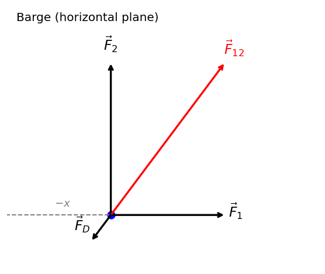
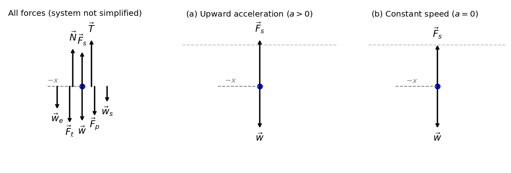
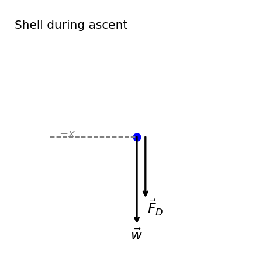
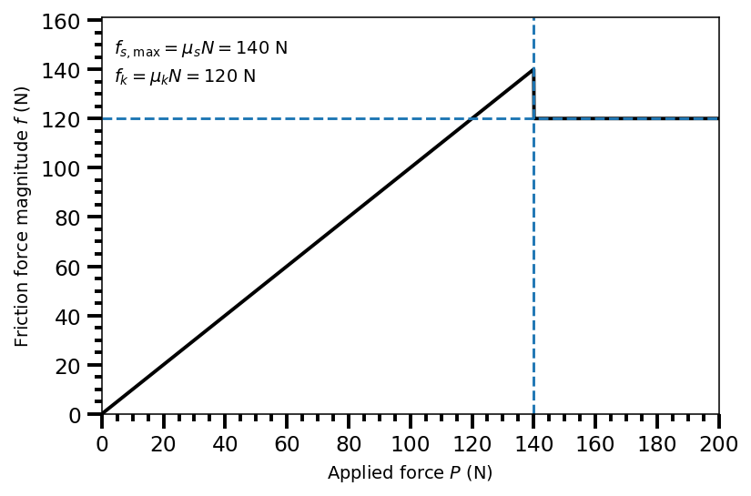

6. Application of Newton’s Laws#
Jul 20, 2026 | 13412 words | 89 min read
Chapter roadmap
This chapter applies Newton’s laws to more realistic situations involving several common forces. We will use free-body diagrams to analyze systems with friction, tension, normal forces, springs, and circular motion, while keeping the connection between force and acceleration at the center of each problem.
As you read, focus on three questions:
Which forces act on the object or system?
Which direction should the coordinate axes point?
What physical condition determines the acceleration or force balance?
These ideas will be used to solve problems involving connected objects, inclined planes, friction, drag, springs, and circular motion.
6.1. Solving Newton’s Laws#
This narration is AI-generated from the course text.
Note
This chapter combines several tools developed earlier in the course. We use vector components from Chapter 2, acceleration vectors from Chapter 4, and free-body diagrams from Chapter 5 to apply Newton’s second law to real systems.
6.1.1. Problem-Solving Strategies#
Applying Newton’s Laws of Motion
Most problems in this chapter follow the same pattern: choose a system, identify the external forces, turn those forces into components, and apply Newton’s second law.
Define the system of interest. Decide which object or group of objects you are analyzing. Newton’s second law uses only the external forces acting on that system.
Choose useful axes. Pick coordinate axes that make the force components as simple as possible. When motion occurs along a slope, curve, or rope, it is often useful to align one axis with the motion or acceleration.
Draw a free-body diagram. Draw only the external forces acting on the chosen system. Do not draw velocity, acceleration, or the net force as separate forces.
Write Newton’s second law by components. Start from \(\sum \vec{F}=m\vec{a}\), then write the component equations such as
\[\begin{align*} \sum F_x &= ma_x,\\ \sum F_y &= ma_y. \end{align*}\]Use constraints and known conditions. Constant velocity means \(a=0\). Static equilibrium means the net force is zero. A massless rope has the same tension throughout. A frictionless pulley changes the direction of the tension but not its magnitude.
Solve symbolically before evaluating. Keep the algebra general as long as possible. Substitute numerical values only after the physical relationships are clear.
Check the result. The answer should have the correct units, the correct direction, and a physically reasonable size.
This strategy is not a recipe for memorizing equations. It is a way to translate a physical situation into Newton’s second law. The hardest step is usually deciding what belongs in the free-body diagram and what does not.
Consider the challenge of lifting a grand piano into a second-story apartment.
Which of Newton’s laws are involved?

Fig. 6.1 (a) A piano is lifted by a crane. The original scene is redrawn in a deliberately simplified form to emphasize the essential geometry. (b) With the simplified sketch, the relevant forces are easily identified: the rope tension \(\vec{T}\), the force exerted by the piano on the rope \(\vec{F}_T\), and the weight of the piano \(\vec{w}\). (c) Defining the piano as the system of interest removes \(\vec{F}_T\), which acts on the outside world, leaving only \(\vec{T}\) and \(\vec{w}\) in the free-body diagram (FBD). (d) When the piano is stationary, these forces are equal in magnitude and opposite in direction, so \(\vec{T} = -\vec{w}\). Image Credit: modified from original on OpenStax.#
Figure 6.1 shows that we can represent all forces with arrows and simplify the analysis with a more crude representation.
It is important to make a list of knowns and unknowns so that we can properly identify the system of interest. Recall that Newton’s 2nd law involves only external forces, so we
first list all the forces, and
then identify which are internal or external.
The identified forces are:
\(\vec{T}\): tension in the rope above the piano
\(\vec{F}_{T}\): force that the piano exerts on the rope, and
\(\vec{w}\): weight of the piano.
All other forces (e.g., nudge of a breeze) are assumed to be negligible.
Newton’s 3rd law can be used to identify whether forces are exerted between internal components of a system or between the system and an external component.
The \(\vec{T}\) and \(\vec{F}_T\) form a force-pair, where we only include the external component \(\vec{T}\) in our FBD (see Fig. 6.1b).
Figure 6.1c shows a FBD, where Newton’s 2nd law is applied in Fig. 6.1d.
Once external forces are clearly identified in FBDs, it should be straightforward to put them into Newton’s 2nd law and form equations that can be solved.
If the problem is 1D (i.e., forces are parallel), then the forces can be handled algebraically.
If the problem is 2D, then it must be broken into components and then, solved as a pair of 1D problems.
It is usually convenient to make one axis parallel to the direction of motion, if this is known.
Checkpoint
Which forces act on the chosen system, and which forces act on something outside the system?
Then you have
We must check the solution to tell whether it is reasonable. For example, it is reasonable to find that friction causes an object to slide down an incline more slowly than when no friction exits.
In practice, intuition (i.e. knowing what is reasonable at a glance) develops through solving many problems (i.e., experience).
Ut est rerum omnium magister usus. (“Experience is the teacher of all things.”)
—Julius Caesar
Another way to check a solution is to check the units. If we are solving for force and end up with units of only velocity, then we have made a mistake.
6.1.2. Particle Equilibrium#
A particle in equilibrium is one that obey’s Newton’s 1st law (i.e., the external forces are balanced). Static equilibrium involves objects at rest, and dynamic equilibrium involves objects in motion without acceleration.
Checkpoint
If an object is moving at constant velocity, is it in equilibrium? What does that imply about \(\sum \vec{F}\)?
Particle equilibrium is the force version of constant velocity. If the acceleration is zero, Newton’s second law becomes \(\sum \vec{F}=0\). This extends the equilibrium ideas from Newton’s first law and the free-body-diagram workflow from Chapter 5.
6.1.2.1. Example Problem: Different Tensions at Different Angles#
Exercise 6.1
The Problem
Consider the traffic light (mass of \(15\ {\rm kg}\)) suspended from two wires as shown in Figure 6.2. Find the tension in each wire, neglecting the masses of the wires.
Fig. 6.2 A traffic light is suspended from two wires. (b) Some of the forces involved. (c) Only forces acting on the system are shown here. The free-body diagram for the traffic light is also shown. (d) The forces projected onto vertical and horizontal axes. The horizontal components of the tensions must cancel, and the sum of the vertical components of the tensions must equal the weight of the traffic light. (e) The free-body diagram shows the vertical and horizontal forces acting on the traffic light. Image Credit: OpenStax: Solving Problems with Newton’s Laws.#
Show worked solution
The Model
The system of interest is the traffic light. We model the traffic light as a particle in static equilibrium, so its acceleration is zero. We choose \(+\hat{i}\) to point horizontally to the right and \(+\hat{j}\) to point vertically upward. With this coordinate choice, the left-wire tension \(\vec{T}_1\) points up and to the left, the right-wire tension \(\vec{T}_2\) points up and to the right, and the weight \(\vec{w}\) points downward in the \(-\hat{j}\) direction.
The left wire makes an angle of \(30^\circ\) with the horizontal, and the right wire makes an angle of \(45^\circ\) with the horizontal. The two wires are treated as massless and inextensible, so each wire exerts a tension force along its own direction. The only forces acting on the traffic light are the two tensions and the weight (similar to the Tension in a Tightrope). Air resistance and motion of the light are neglected.
The Math
For static equilibrium, Newton’s second law requires the net force on the traffic light to be zero. Since the traffic light has no acceleration in either direction,
The forces acting on the traffic light are the left tension \(\vec{T}_1\), the right tension \(\vec{T}_2\), and the weight \(\vec{w}=-mg\,\hat{j}\). Resolving the two tension forces into horizontal and vertical components gives the component equations
The horizontal equation relates the two unknown tensions. We solve this equation for \(T_2\) in terms of \(T_1\) so that the vertical equation will contain only one unknown tension:
The vertical equation determines the actual size of the tensions because the vertical components must balance the weight of the traffic light. We substitute the horizontal-equilibrium relation for \(T_2\) into the vertical equation and solve for \(T_1\):
The numerical value of \(T_1\) follows from the vertical force balance, and then the horizontal force balance gives \(T_2\):
The Conclusion
The tension in the left wire is \(T_1 = 108\ {\rm N}\), and the tension in the right wire is \(T_2 = 132\ {\rm N}\). The right wire has the larger tension because its direction is closer to vertical, so it supplies more of the upward force needed to balance the traffic light’s weight. These values satisfy Newton’s second law for static equilibrium because the horizontal components cancel and the vertical components balance the weight.
The Verification
The calculation is verified by substituting the computed tensions back into the horizontal and vertical Newton’s second-law equations. The horizontal net force should be approximately zero, and the vertical net force should also be approximately zero because the traffic light is in static equilibrium.
import numpy as np
import matplotlib.pyplot as plt
# Define the given quantities.
m = 15.0 # mass of the traffic light (kg)
g = 9.81 # acceleration due to gravity (m/s^2)
theta1 = np.deg2rad(30.0) # angle of the left wire above the horizontal (rad)
theta2 = np.deg2rad(45.0) # angle of the right wire above the horizontal (rad)
# Compute the tensions from the equilibrium equations.
T1 = m * g / (np.sin(theta1) + (np.cos(theta1) / np.cos(theta2)) * np.sin(theta2))
T2 = T1 * np.cos(theta1) / np.cos(theta2)
# Check the horizontal and vertical forms of Newton's second law.
Fx_net = -T1 * np.cos(theta1) + T2 * np.cos(theta2)
Fy_net = T1 * np.sin(theta1) + T2 * np.sin(theta2) - m * g
print(f"The tension in the left wire is {T1:.3g} N.")
print(f"The tension in the right wire is {T2:.3g} N.")
print(f"The horizontal net force is {Fx_net:.2e} N, which is approximately zero.")
print(f"The vertical net force is {Fy_net:.2e} N, which is approximately zero.")
6.1.3. Particle Acceleration#
Instead of reducing the problem to a particle in static equilibrium (i.e., \(\sum F_{\rm net} = 0\)), we can also reduce complex problems into one where the net force is nonzero, or a particle with an acceleration.
When the net force is not zero, the object accelerates in the direction of the net force. The vector equation \(\sum \vec{F}=m\vec{a}\) is solved component by component, using the same vector-component ideas introduced in Chapter 2.
We’ll look through 4 examples that illustrate different ways we can decompose the complex motion into a simpler one:
Drag force on a barge,
Net force in an elevator,
Two attached blocks connected with a pulley,
Atwood Machine: vertical blocks with a pulley.
Note
It is useful to identify constraints that make a problem solvable. We saw this in the Tension in a Tightrope problem when identifying the tension.
In Chapter 5, we showed that the normal (a contact force) acts normal to the surface so that an object does not have an acceleration perpendicular to the surface (i.e., stays static). The bathroom scale is an excellent example of a normal force acting on a body.
Checkpoint
If the acceleration is zero in one direction but nonzero in another, which component equations of Newton’s second law still matter?
A bathroom scale provides a measure of how much it must push upward to support the weight of an object. The net force in an elevator problem will examine whether we can predict what you would measure on a bathroom scale that is moving upward (accelerating or moving at constant speed).
Do you think the scale will measure a different weight when the elevator is moving at constant speed?
What if the elevator is accelerating upward?
Take a guess before looking at the example problem.
6.1.3.1. Example Problem: Drag Force on a Barge#
Exercise 6.2
The Problem
Two tugboats push on a barge at different angles as shown in Figure 6.3. The first tugboat exerts a force of \(2.7\times10^{5}\ {\rm N}\) in the \(x\)-direction, and the second tugboat exerts a force of \(3.6\times10^{5}\ {\rm N}\) in the \(y\)-direction. The mass of the barge is \(5\times10^{6}\ {\rm kg}\) and its acceleration is observed to be \(7.5\times10^{-2}\ {\rm m/s^2}\) in the direction shown. What is the drag force of the water on the barge resisting the motion?
Note
Drag force is a frictional force exerted by fluids, such as air or water. The drag force opposes the motion of the object. Since the barge is flat bottomed, we can assume that the drag force is in the direction opposite the barge’s motion.
Fig. 6.3 (a) A view from above of two tugboats pushing on a barge. (b) The free-body diagram for the ship contains only forces acting in the plane of the water. It omits the two vertical forces, because the weight of the barge and the buoyant force of the water supporting it cancel and are not shown. Note that \(\vec{F}_{\rm app}\) is the total applied force of the tugboats. Figure Credit: OpenStax: Solving Problems with Newton’s Laws.#
Show worked solution
The Model
The system of interest is the barge. We model the barge as a rigid object translating on the horizontal surface of the water. We choose \(+\hat{i}\) to point in the direction of the first tugboat’s force and \(+\hat{j}\) to point in the direction of the second tugboat’s force. With this coordinate choice, the tugboat forces are \(\vec{F}_1 = F_1\,\hat{i}\) and \(\vec{F}_2 = F_2\,\hat{j}\). The resultant tugboat force \(\vec{F}_{\rm app}\) points in the direction of the barge’s observed acceleration. The drag force exerted by the water points opposite the barge’s motion, so it points opposite \(\vec{F}_{\rm app}\). The weight of the barge and the buoyant force from the water balance vertically, so they are omitted from the horizontal force model.
The Math
For horizontal motion, Newton’s second law relates the net horizontal force on the barge to the observed acceleration of the barge.
The forces acting on the barge in the horizontal plane are the tugboat forces \(\vec{F}_1\) and \(\vec{F}_2\) and the drag force \(\vec{F}_D\). The tugboat forces combine to form the applied force \(\vec{F}_{\rm app}\), and the drag force acts opposite the barge’s motion. Newton’s second law for the horizontal motion is
The two tugboat forces are perpendicular, so the magnitude and direction of the applied force come from the vector components of \(\vec{F}_{\rm app}\). Resolving the applied force into components gives
The applied-force magnitude and direction follow from the perpendicular tugboat-force components by
Along the direction of motion, the applied force points forward and the drag force points backward. Newton’s second law along this direction gives
We solve this equation for the drag force magnitude, which yields
The drag force follows from Newton’s second law along the direction of motion as
The Conclusion
The water exerts a drag force with magnitude \(F_D = 7.5\times10^{4}\ {\rm N}\). This drag force acts opposite the barge’s motion, while the tugboat resultant points in the direction of motion. The result is consistent with Newton’s second law because the applied tugboat force is larger than the drag force, leaving a net force that accelerates the barge.
The Verification
The calculation is verified by recomputing the tugboat resultant, the required net force \(ma\), and the drag force. The computed drag force should equal the difference between the applied tugboat resultant and the net force needed to produce the observed acceleration.
import numpy as np
import matplotlib.pyplot as plt
# Define the given quantities.
F1 = 2.7e5 # force exerted by the first tugboat in the x-direction (N)
F2 = 3.6e5 # force exerted by the second tugboat in the y-direction (N)
m = 5.0e6 # mass of the barge (kg)
a = 7.5e-2 # observed acceleration of the barge (m/s^2)
# Compute the applied force from the perpendicular tugboat forces.
F_app = np.sqrt(F1**2 + F2**2)
theta = np.rad2deg(np.arctan2(F2, F1))
# Compute the required net force and the drag force.
F_net = m * a
F_D = F_app - F_net
print(f"The applied tugboat force has magnitude {F_app:.2g} N.")
print(f"The applied tugboat force points {theta:.2g} degrees from the x-axis.")
print(f"The net force required to produce the observed acceleration is {F_net:.2g} N.")
print(f"The drag force exerted by the water has magnitude {F_D:.2g} N.")
Show code cell source
import numpy as np
import matplotlib.pyplot as plt
# -----------------------------
# Global axis reference (Chapter 5 style)
# -----------------------------
theta = np.deg2rad(0.0) # reference angle for the horizontal axis (rad)
x_hat = np.array([np.cos(theta), np.sin(theta)]) # unit vector along the +x direction
y_hat = np.array([-np.sin(theta), np.cos(theta)]) # unit vector perpendicular to x_hat
# -----------------------------
# draw_fbd helper (Chapter 5 style)
# -----------------------------
def draw_fbd(ax, forces, labels, note, colors=None, offsets=None, label_offsets=None):
ax.plot(0, 0, "b.", markersize=15)
if colors is None:
colors = ["black"] * len(forces)
if offsets is None:
offsets = [np.array([0.0, 0.0])] * len(forces)
if label_offsets is None:
label_offsets = [(6, 6)] * len(forces)
for F, lab, col, off, laboff in zip(forces, labels, colors, offsets, label_offsets):
Fx, Fy = F
ox, oy = off
ax.annotate("", xy=(Fx + ox, Fy + oy), xytext=(ox, oy), arrowprops=dict(arrowstyle="->", lw=2, color=col, shrinkA=0, shrinkB=0))
dx_pts, dy_pts = laboff
ax.annotate(lab, xy=(Fx + ox, Fy + oy), xytext=(dx_pts, dy_pts), textcoords="offset points", color=col, fontsize=14, ha="center", va="bottom")
mags = [np.hypot(F[0], F[1]) for F in forces]
R = 1.1 * max(mags + [1e-6])
ax.set_xlim(-0.5 * R, R)
ax.set_ylim(-0.25 * R, R)
ax.set_aspect("equal", adjustable="box")
ax.set_xticks([])
ax.set_yticks([])
for spine in ax.spines.values():
spine.set_visible(False)
ax.text(0.03, 0.98, note, transform=ax.transAxes, fontsize=12, va="top")
ax.plot([-1 * x_hat[0], 0], [-x_hat[1], 0], linestyle="--", color="gray", lw=1.2)
ax.text(-0.3 * x_hat[0], 0.04 * R, r"$-x$", color="gray", fontsize=11)
# -----------------------------
# Barge forces (scaled to show directions + relative magnitudes)
# -----------------------------
F1 = 2.7e5 # force exerted by the first tugboat in the +x direction (N)
F2 = 3.6e5 # force exerted by the second tugboat in the +y direction (N)
m = 5.0e6 # mass of the barge (kg)
a = 7.5e-2 # observed acceleration of the barge (m/s^2)
F_app = np.sqrt(F1**2 + F2**2) # magnitude of the resultant tugboat force (N)
F_D = F_app - m * a # drag force magnitude opposing the motion (N)
u_app = np.array([F1, F2]) / F_app # unit vector in the direction of the resultant tugboat force
ratio_drag = F_D / F_app # drag force scaled relative to the resultant tugboat force
F1_vec = np.array([F1, 0.0]) / F_app # scaled first tugboat force vector
F2_vec = np.array([0.0, F2]) / F_app # scaled second tugboat force vector
F12_vec = u_app # scaled resultant tugboat force vector
FD_vec = -ratio_drag * u_app # scaled drag force vector
forces = [F1_vec, F2_vec, F12_vec, FD_vec]
labels = [r"$\vec{F}_1$", r"$\vec{F}_2$", r"$\vec{F}_{12}$", r"$\vec{F}_D$"]
colors = ["black", "black", "red", "black"]
label_offsets = [(12, -6), (0, 10), (10, 6), (-10, 6)]
offsets = [np.array([0.0, 0.0])] * len(forces)
print(f"The resultant tugboat force has magnitude {F_app:.2g} N.")
print(f"The water drag force has magnitude {F_D:.2g} N and points opposite the red resultant force.")
# -----------------------------
# Plot
# -----------------------------
fig, ax = plt.subplots(1, 1, figsize=(5, 4), dpi=120)
draw_fbd(ax, forces, labels, "Barge (horizontal plane)", colors=colors, offsets=offsets, label_offsets=label_offsets)
plt.tight_layout()
plt.show()
The resultant tugboat force has magnitude 4.5e+05 N.
The water drag force has magnitude 7.5e+04 N and points opposite the red resultant force.

6.1.3.2. Example Problem: Bathroom Scale in an Elevator#
Exercise 6.3
The Problem
Figure 6.4 shows a \(75\text{-kg}\) man (weight of about \(165\ {\rm lb}\)) standing on a bathroom scale in an elevator. Calculate the scale reading: (a) if the elevator accelerates upward at a rate of \(1.2\ {\rm m/s^2}\), and (b) if the elevator moves upward at a constant speed of \(1\ {\rm m/s}\).
Fig. 6.4 (a) The various forces acting when a person stands on a bathroom scale in an elevator. The arrows are approximately correct for when the elevator is accelerating upward; broken arrows represent forces too large to be drawn to scale. \(\vec{T}\) is the tension in the supporting cable, \(\vec{w}\) is the weight of the person, \(\vec{w}_s\) is the weight of the scale, \(\vec{w}_e\) is the weight of the elevator, \(\vec{F}_s\) is the force of the scale on the person, \(\vec{F}_p\) is the force of the person on the scale, \(\vec{F}_t\) is the force of the scale on the floor of the elevator, and \(\vec{N}\) is the force of the floor upward on the scale. (b) The free-body diagram shows only the external forces acting on the designated system of interest, the person, and is the diagram we use for the solution of the problem. Figure Credit: OpenStax: Solving Problems with Newton’s Laws.#
Show worked solution
The Model
The system of interest is the person standing on the scale. We model the person as a particle moving vertically with the elevator. We choose \(+\hat{j}\) to point upward and \(-\hat{j}\) to point downward. With this coordinate choice, the scale force on the person points upward, so \(\vec{F}_s=F_s\,\hat{j}\), and the weight of the person points downward, so \(\vec{w}=-mg\,\hat{j}\). The scale reading is the magnitude of the upward contact force \(F_s\). Air resistance is neglected, and the motion is one-dimensional along the vertical axis.
The Math
For vertical motion, Newton’s second law relates the net vertical force on the person to the person’s vertical acceleration.
The forces acting on the person are the upward scale force \(\vec{F}_s\) and the downward weight \(\vec{w}\). Applying Newton’s second law in the vertical direction gives
We solve this equation for the scale reading \(F_s\), which yields
This equation shows that the scale reading depends on the vertical acceleration of the person. We now reuse this same equation for both cases.
(a) First, we evaluate the case when the elevator accelerates upward at \(a_y = 1.2\ {\rm m/s^2}\). Since the acceleration points in the \(+\hat{j}\) direction, \(a_y\) is positive:
(b) Then, we evaluate the case when the elevator moves upward at a constant speed of \(1\ {\rm m/s}\). Constant speed implies \(a_y=0\), so
The Conclusion
When the elevator accelerates upward at \(1.2\ {\rm m/s^2}\), the scale reads \(F_s = 826\ {\rm N}\). When the elevator moves upward at constant speed, the acceleration is zero and the scale reads \(F_s = 736\ {\rm N}\). The scale reading is larger during upward acceleration because the scale must exert enough upward force to both balance the person’s weight and produce the upward acceleration.
The Verification
The calculation is verified by evaluating the same Newton’s second-law equation, \(F_s=m(g+a_y)\), for both elevator motions. The constant-speed case should reduce to the person’s weight because \(a_y=0\).
import numpy as np
import matplotlib.pyplot as plt
# Define the given quantities.
m = 75.0 # mass of the person (kg)
g = 9.81 # acceleration due to gravity (m/s^2)
a_up = 1.20 # upward acceleration of the elevator in part (a) (m/s^2)
a_const = 0.0 # acceleration of the elevator in part (b) (m/s^2)
# Compute the scale readings from Newton's second law.
Fs_up = m * (g + a_up)
Fs_const = m * (g + a_const)
print(f"When the elevator accelerates upward, the scale reading is {Fs_up:.3g} N.")
print(f"When the elevator moves upward at constant speed, the scale reading is {Fs_const:.3g} N.")
print(f"The person's weight is {m*g:.3g} N, matching the constant-speed scale reading.")
Show code cell source
import numpy as np
import matplotlib.pyplot as plt
# -----------------------------
# Global axis reference
# -----------------------------
theta = np.deg2rad(0.0) # reference angle for the horizontal axis (rad)
x_hat = np.array([np.cos(theta), np.sin(theta)]) # unit vector along the +x direction
y_hat = np.array([-np.sin(theta), np.cos(theta)]) # unit vector perpendicular to x_hat
# -----------------------------
# draw_fbd helper (Chapter 5 style, adjusted limits)
# -----------------------------
def draw_fbd(ax, forces, labels, note, colors=None, offsets=None, label_offsets=None):
ax.plot(0, 0, "b.", markersize=15)
if colors is None:
colors = ["black"] * len(forces)
if offsets is None:
offsets = [np.array([0.0, 0.0])] * len(forces)
if label_offsets is None:
label_offsets = [(6, 6)] * len(forces)
for F, lab, col, off, laboff in zip(forces, labels, colors, offsets, label_offsets):
Fx, Fy = F
ox, oy = off
ax.annotate("", xy=(Fx + ox, Fy + oy), xytext=(ox, oy), arrowprops=dict(arrowstyle="->", lw=2, color=col, shrinkA=0, shrinkB=0))
dx_pts, dy_pts = laboff
ax.annotate(lab, xy=(Fx + ox, Fy + oy), xytext=(dx_pts, dy_pts), textcoords="offset points", color=col, fontsize=14, ha="center", va="bottom")
mags = [np.hypot(F[0], F[1]) for F in forces]
R = max(mags + [1e-6])
ax.set_xlim(-1.65 * R, 1.65 * R)
ax.set_ylim(-1.75 * R, 1.75 * R)
ax.set_aspect("equal", adjustable="box")
ax.set_xticks([])
ax.set_yticks([])
for spine in ax.spines.values():
spine.set_visible(False)
ax.text(0.02, 0.97, note, transform=ax.transAxes, fontsize=12, va="top")
ax.plot([-x_hat[0], 0], [-x_hat[1], 0], linestyle="--", color="gray", lw=1.2)
ax.text(-0.75 * R, 0.08 * R, r"$-x$", color="gray", fontsize=11)
# -----------------------------
# Physical parameters
# -----------------------------
m = 75.0 # mass of the person (kg)
g = 9.81 # acceleration due to gravity (m/s^2)
a_up = 1.20 # upward elevator acceleration in part (a) (m/s^2)
w = m * g # weight magnitude of the person (N)
Fs_up = m * (g + a_up) # scale force during upward acceleration (N)
Fs_const = m * g # scale force during constant-speed motion (N)
# Normalize by w.
w_vec = np.array([0.0, -1.0])
Fs_up_vec = np.array([0.0, Fs_up / w])
Fs_const_vec = np.array([0.0, Fs_const / w])
# -----------------------------
# Panel 1: All forces (expanded x offsets)
# -----------------------------
T_vec = np.array([0.0, 1.35]) # cable tension on elevator, scaled
N_vec = np.array([0.0, 1.10]) # normal force on scale, scaled
Fp_vec = np.array([0.0, -0.85]) # force of person on scale, scaled
Ft_vec = np.array([0.0, -1.05]) # force of scale on elevator floor, scaled
ws_vec = np.array([0.0, -0.45]) # weight of scale, scaled
we_vec = np.array([0.0, -0.65]) # weight of elevator, scaled
forces_all = [T_vec, N_vec, Fs_const_vec, Fp_vec, Ft_vec, ws_vec, we_vec, w_vec]
labels_all = [r"$\vec{T}$", r"$\vec{N}$", r"$\vec{F}_s$", r"$\vec{F}_p$", r"$\vec{F}_t$", r"$\vec{w}_s$", r"$\vec{w}_e$", r"$\vec{w}$"]
d = 0.18 # horizontal offset spacing for collinear force arrows
offsets_all = [np.array([+1.5*d, 0.0]), np.array([-1.5*d, 0.0]), np.array([0.0, 0.0]), np.array([+2*d, 0.0]), np.array([-2*d, 0.0]), np.array([+4*d, 0.0]), np.array([-4*d, 0.0]), np.array([0.0, 0.0])]
label_offsets_all = [(0, 8)] * 3 + [(0, -22)] * 5
# -----------------------------
# Panel 2 & 3: Simplified systems
# -----------------------------
forces_up = [Fs_up_vec, w_vec]
forces_const = [Fs_const_vec, w_vec]
labels_simple = [r"$\vec{F}_s$", r"$\vec{w}$"]
label_offsets_simple = [(0, 8), (0, -22)]
print(f"The upward-acceleration scale force is {Fs_up:.3g} N.")
print(f"The constant-speed scale force equals the weight, which is {Fs_const:.3g} N.")
print(f"The upward-acceleration scale force is {Fs_up/Fs_const:.3g} times the constant-speed value.")
# -----------------------------
# Plot (tight spacing)
# -----------------------------
fig, axes = plt.subplots(1, 3, figsize=(11, 4), dpi=120, gridspec_kw={"wspace": 0.15})
draw_fbd(axes[0], forces_all, labels_all, "All forces (system not simplified)", offsets=offsets_all, label_offsets=label_offsets_all)
draw_fbd(axes[1], forces_up, labels_simple, r"(a) Upward acceleration ($a>0$)", label_offsets=label_offsets_simple)
draw_fbd(axes[2], forces_const, labels_simple, r"(b) Constant speed ($a=0$)", label_offsets=label_offsets_simple)
# Enforce a common y-scale for comparison panels.
R_ref = max(np.hypot(Fs_up_vec[0], Fs_up_vec[1]), np.hypot(w_vec[0], w_vec[1]))
for ax in axes[1:3]:
ax.set_ylim(-1.75 * R_ref, 1.75 * R_ref)
# Draw a reference line at the mg level.
y_ref = Fs_const_vec[1]
axes[1].axhline(y_ref, linestyle="--", color="gray", lw=1.2, alpha=0.5)
axes[2].axhline(y_ref, linestyle="--", color="gray", lw=1.2, alpha=0.5)
plt.subplots_adjust(left=0.03, right=0.98, top=0.92, bottom=0.08)
plt.show()
The upward-acceleration scale force is 826 N.
The constant-speed scale force equals the weight, which is 736 N.
The upward-acceleration scale force is 1.12 times the constant-speed value.

6.1.3.3. Example Problem: Two Attached Blocks#
Exercise 6.4
The Problem
Figure 6.5 shows a block of mass \(m_1\) on a frictionless, horizontal surface. It is pulled by a light string that passes over a frictionless and massless pulley. The other end of the string is connected to a block of mass \(m_2\). Find the acceleration of the blocks and the tension in the string in terms of \(m_1\), \(m_2\), and \(g\).
Fig. 6.5 (a) Block 1 is connected by a light string to block 2. (b) The free-body diagrams of the blocks. Figure Credit: OpenStax: Solving Problems with Newton’s Laws#
Show worked solution
The Model
The system consists of two blocks connected by a light, inextensible string over a frictionless, massless pulley. Block \(m_1\) moves horizontally on a frictionless table, and block \(m_2\) moves vertically. The string constrains the blocks to have the same acceleration magnitude.
For block \(m_1\), we choose \(+\hat{i}\) to point to the right and \(+\hat{j}\) to point upward. With this convention, the tension \(\vec{T}\) points in the \(+\hat{i}\) direction, the normal force \(\vec{N}\) points in the \(+\hat{j}\) direction, and the weight \(\vec{w}_1\) points in the \(-\hat{j}\) direction. For block \(m_2\), we use \(+\hat{j}\) upward, so the tension \(\vec{T}\) points in the \(+\hat{j}\) direction and the weight \(\vec{w}_2\) points in the \(-\hat{j}\) direction. The hanging block accelerates downward, while the block on the table accelerates to the right.
This example uses the same free-body-diagram workflow developed in Chapter 5. The important step here is to apply Newton’s second law separately to each block and then use the string constraint to relate their accelerations.
The Math
For the connected-block system, Newton’s second law must be applied separately to each block because the tension is an internal interaction between the two blocks.
The forces acting on block \(m_1\) are the tension, the normal force, and its weight. The vertical forces on \(m_1\) balance, while the horizontal tension provides its acceleration to the right. Applying Newton’s second law to block \(m_1\) gives
The forces acting on block \(m_2\) are the upward tension and the downward weight. Since \(+\hat{j}\) points upward but \(m_2\) accelerates downward, its vertical acceleration is \(a_{2y}=-a\). Applying Newton’s second law to block \(m_2\) gives
These two equations form the governing equations for the system:
We solve these equations for the acceleration by substituting \(T=m_1a\) into the equation for block \(m_2\):
We then use the block \(m_1\) equation to solve for the tension:
The Conclusion
The two blocks accelerate with magnitude \(a = \dfrac{m_2}{m_1+m_2}\,g\). Block \(m_1\) accelerates to the right, and block \(m_2\) accelerates downward. The tension in the string is \(T = \dfrac{m_1m_2}{m_1+m_2}\,g\). The acceleration is less than \(g\) because the weight of the hanging block must accelerate both masses, not just \(m_2\).
The Verification
The expressions are verified by substituting representative masses into the symbolic results and checking Newton’s second-law equations for both blocks. The computed tension should equal \(m_1a\) for the block on the table, and the hanging block equation should also be satisfied.
import numpy as np
import matplotlib.pyplot as plt
# Define representative values for the symbolic check.
m1 = 4.0 # mass of the block on the table (kg)
m2 = 1.0 # mass of the hanging block (kg)
g = 9.81 # acceleration due to gravity (m/s^2)
# Compute the acceleration and tension from the derived expressions.
a = (m2 / (m1 + m2)) * g
T = (m1 * m2 / (m1 + m2)) * g
# Check Newton's second law for each block.
block1_check = T - m1 * a
block2_check = T - m2 * g + m2 * a
print(f"For m1 = {m1:.2g} kg and m2 = {m2:.2g} kg, the acceleration magnitude is {a:.3g} m/s^2.")
print(f"For these same masses, the string tension is {T:.3g} N.")
print(f"The block 1 force check gives {block1_check:.2e} N, which is approximately zero.")
print(f"The block 2 force check gives {block2_check:.2e} N, which is approximately zero.")
6.1.3.4. Example Problem: Atwood Machine#
Exercise 6.5
The Problem
A classic problem in physics, similar to the one we just solved, is the Atwood machine, which consists of a light rope running over a frictionless pulley, with two objects of different mass attached. It is particularly useful in understanding the connection between force and motion.
In Figure 6.6, the masses are \(m_1 = 2\ {\rm kg}\) and \(m_2 = 4\ {\rm kg}\). The pulley is frictionless. (a) If \(m_2\) is released, what will its acceleration be? (b) What is the tension in the string?
Fig. 6.6 An Atwood machine and free-body diagrams for each of the two blocks. Figure Credit: OpenStax: Solving Problems with Newton’s Laws#
Show worked solution
The Model
Each mass is modeled as a particle connected by a light, inextensible string over a frictionless, massless pulley. The ideal string and pulley make the tension magnitude the same on both sides of the pulley. The string constraint makes the blocks have the same acceleration magnitude.
We choose \(+\hat{j}\) to point upward for both blocks. With this convention, the tension on block \(m_1\) points in the \(+\hat{j}\) direction and the weight of block \(m_1\) points in the \(-\hat{j}\) direction. The tension on block \(m_2\) also points in the \(+\hat{j}\) direction, and the weight of block \(m_2\) points in the \(-\hat{j}\) direction. Since \(m_2>m_1\), block \(m_2\) accelerates downward and block \(m_1\) accelerates upward.
This problem is closely related to the previous attached-blocks example. In both problems, Newton’s second law is applied separately to each block, and the string constraint connects their accelerations.
The Math
For the Atwood machine, Newton’s second law must be applied separately to each block because the tension is an internal interaction between the two masses.
The forces acting on block \(m_1\) are the upward tension and the downward weight. Since block \(m_1\) accelerates upward in the \(+\hat{j}\) direction, Newton’s second law gives
The forces acting on block \(m_2\) are also the upward tension and the downward weight. Since block \(m_2\) accelerates downward while \(+\hat{j}\) points upward, its acceleration is \(-a\,\hat{j}\). Newton’s second law gives
These two equations form the governing equations for the system and will be reused in both parts:
(a) First, we determine the acceleration of the blocks after \(m_2\) is released. We eliminate the tension by subtracting the equation for block \(m_1\) from the equation for block \(m_2\) and then solve for \(a\):
The acceleration follows from the mass difference and the total mass being accelerated:
(b) Next, we find the tension in the string by reusing the equation for block \(m_1\). We solve that equation for \(T\) and substitute the acceleration found in part (a):
The Conclusion
The blocks accelerate with magnitude \(a = 3.27\ {\rm m/s^2}\). Block \(m_2\) accelerates downward, and block \(m_1\) accelerates upward. The tension in the string is \(T = 26.2\ {\rm N}\). This result closely mirrors the attached-blocks problem: the acceleration is determined by the net unbalanced weight divided by the total mass being accelerated.
The Verification
The calculation is verified by substituting the computed acceleration and tension back into Newton’s second-law equation for each block. The force-balance residual for each block should be approximately zero.
import numpy as np
import matplotlib.pyplot as plt
# Define the given quantities.
m1 = 2.00 # mass of the lighter block (kg)
m2 = 4.00 # mass of the heavier block (kg)
g = 9.81 # acceleration due to gravity (m/s^2)
# Compute the acceleration and tension from the derived expressions.
a = ((m2 - m1) / (m1 + m2)) * g
T = m1 * (g + a)
# Check Newton's second law for each block.
block1_check = T - m1 * g - m1 * a
block2_check = T - m2 * g + m2 * a
print(f"The acceleration magnitude of the blocks is {a:.3g} m/s^2.")
print(f"The tension in the string is {T:.3g} N.")
print(f"The Newton's second-law check for block m1 gives {block1_check:.2e} N, which is approximately zero.")
print(f"The Newton's second-law check for block m2 gives {block2_check:.2e} N, which is approximately zero.")
6.1.4. Newton’s Laws of Motion and Kinematics#
Newton’s laws of motion can also be integrated with other concepts to solve problems of motion. For example, forces produce accelerations, which was the main topic when discussing kinematics.
Newton’s second law gives the acceleration. Once the acceleration is known, the motion is found using the kinematics tools developed earlier, including constant-acceleration motion in Chapter 3 and vector motion in Chapter 4.
For problems that involve various types of forces, acceleration, velocity and/or position, it helps to identify the principles involved when listing the givens and quantities to be calculated. The following examples illustrate how to apply the problem-solving strategies. These example problems are
Soccer player at top speed,
Force on a model helicopter,
Force on a baggage tractor, and
The motion of vertical projectile (Bonus).
Checkpoint
When a force determines acceleration first, which kinematics quantity should you compute next: velocity, position, or time?
Recall that \( v = \frac{ds}{dt}\) and \(a = \frac{dv}{dt}\). This means that we can use the calculus forms when acceleration is not constant (i.e., \(a = f(s,v,t)\)).
First we solve for \(dt\) in each equation, then set them equal to each other, or
When \(a = f(v)\), we can apply the following integrals
6.1.4.1. Example Problem: Soccer Player Top Speed#
Exercise 6.6
The Problem
A soccer player starts at rest and accelerates forward, reaching a velocity of \(8\ {\rm m/s}\) in \(2.5\ {\rm s}\). (a) What is her average acceleration? (b) What average force does the ground exert forward on the runner so that she achieves this acceleration? The player’s mass is \(70\ {\rm kg}\), and air resistance is negligible.
Show worked solution
The Model
The soccer player is modeled as a particle moving horizontally in one dimension. We choose \(+\hat{i}\) to point forward in the direction of motion. The initial velocity is zero, and the final velocity points in the \(+\hat{i}\) direction. Air resistance is neglected, so the average horizontal force exerted by the ground is the net horizontal force on the player. Vertical forces balance and do not affect the horizontal acceleration.
The Math
For one-dimensional horizontal motion, the average acceleration is the change in velocity divided by the elapsed time.
(a) First, we determine the player’s average acceleration. Since the player starts from rest and reaches a final velocity in the \(+\hat{i}\) direction, the change in velocity is \(\Delta \vec{v} = \Delta v\,\hat{i}\) with \(\Delta v = 8\ {\rm m/s}\):
(b) Next, we use Newton’s second law to determine the average forward force exerted by the ground. Since air resistance is negligible, the forward ground force is the net horizontal force:
The average forward force follows from Newton’s second law using the acceleration found in part (a):
The Conclusion
The soccer player’s average acceleration is \(3.20\ {\rm m/s^2}\) in the forward direction. The average forward force exerted by the ground on the player is \(224\ {\rm N}\). This force is reasonable because it is a moderate horizontal force applied over a short sprinting interval.
The Verification
The calculation is verified by recomputing the average acceleration from the change in velocity and then applying Newton’s second law. The force result should equal the mass multiplied by the acceleration found in part (a).
import numpy as np
import matplotlib.pyplot as plt
v_i = 0.0 # initial speed of the player (m/s)
v_f = 8.00 # final speed of the player (m/s)
dt = 2.50 # elapsed time (s)
m = 70.0 # mass of the player (kg)
a = (v_f - v_i) / dt
F_net = m * a
print(f"The average acceleration of the player is {a:.3g} m/s^2.")
print(f"The average forward force exerted by the ground is {F_net:.3g} N.")
6.1.4.2. Example Problem: Force on a Model Helicopter#
Exercise 6.7
The Problem
A \(1.50\ {\rm kg}\) model helicopter has a velocity of \(5.00\,\hat{j}\ {\rm m/s}\) at \(t = 0\). It is accelerated at a constant rate for \(2.00\ {\rm s}\), after which it has a velocity of \((6.00\,\hat{i} + 12.00\,\hat{j})\ {\rm m/s}\). What is the magnitude of the resultant force acting on the helicopter during this time interval?
Show worked solution
The Model
The helicopter is modeled as a particle moving in two dimensions. We choose \(+\hat{i}\) to point horizontally and \(+\hat{j}\) to point vertically upward. The initial velocity points entirely in the \(+\hat{j}\) direction, while the final velocity has both \(+\hat{i}\) and \(+\hat{j}\) components. The acceleration is constant over the time interval. The resultant force is the net external force responsible for this acceleration.
The Math
For constant acceleration, the acceleration vector is the change in velocity divided by the elapsed time.
The initial and final velocity vectors are
The change in velocity is the final velocity minus the initial velocity:
The acceleration follows from this change in velocity:
Newton’s second law gives the resultant force vector:
The magnitude of the resultant force is found from its components:
The Conclusion
The resultant force acting on the model helicopter has magnitude \(6.91\ {\rm N}\). The force points in the same direction as the acceleration vector, with positive \(\hat{i}\) and positive \(\hat{j}\) components.
The Verification
The calculation is verified by recomputing the velocity change, acceleration vector, force vector, and force magnitude using vector arrays. The computed force magnitude should match the analytical result.
import numpy as np
import matplotlib.pyplot as plt
m = 1.50 # mass of the helicopter (kg)
dt = 2.00 # elapsed time (s)
v_i = np.array([0.00, 5.00]) # initial velocity components (m/s)
v_f = np.array([6.00, 12.00]) # final velocity components (m/s)
a = (v_f - v_i) / dt
F = m * a
F_mag = np.linalg.norm(F)
print(f"The acceleration vector is ({a[0]:.3g}, {a[1]:.3g}) m/s^2.")
print(f"The resultant force vector is ({F[0]:.3g}, {F[1]:.3g}) N.")
print(f"The magnitude of the resultant force is {F_mag:.3g} N.")
6.1.4.3. Example Problem: Baggage Tractor#
Exercise 6.8
The Problem
Figure 6.7a shows a baggage tractor pulling luggage carts from an airplane. The tractor has mass \(650\ {\rm kg}\), while cart A has mass \(250\ {\rm kg}\) and cart B has mass \(150\ {\rm kg}\). The driving force acting for a brief period of time accelerates the system from rest and acts for \(3\ {\rm s}\). (a) If this driving force is given by \(\vec{F} = (820\,t)\,\hat{i}\ {\rm N}\), find the speed after \(3\ {\rm s}\). (b) What is the horizontal force acting on the connecting cable between the tractor and cart A at this instant?
Fig. 6.7 (a) The tractor and carts can be treated as one system when finding the acceleration. (b) The tractor alone can be isolated to find the force in the cable to cart A. Figure Credit: OpenStax: Solving Problems with Newton’s Laws#
Show worked solution
The Model
The tractor and carts are modeled as particles moving together in one horizontal line. We choose \(+\hat{i}\) to point in the direction of motion. The driving force points in the \(+\hat{i}\) direction. The cable force on the tractor points in the \(-\hat{i}\) direction, while the cable force on cart A points in the \(+\hat{i}\) direction. Vertical forces balance and are not needed for the horizontal motion. The driving force varies with time, so the acceleration also varies with time.
The Math
For the full tractor-cart system, the driving force is the only external horizontal force. Newton’s second law gives the acceleration of the entire system:
We solve this equation for the acceleration function:
(a) First, we determine the speed after \(3\ {\rm s}\). Since \(a=dv/dt\) and the system starts from rest, the speed follows from integrating the acceleration:
(b) Next, we isolate the tractor to find the cable force. At \(t=3.00\ {\rm s}\), the acceleration is
For the tractor alone, the driving force points forward and the cable force points backward. Newton’s second law gives
The Conclusion
After \(3\ {\rm s}\), the tractor and carts have speed \(3.51\ {\rm m/s}\). At that instant, the horizontal force in the cable between the tractor and cart A is \(938\ {\rm N}\). Treating the whole system gives the acceleration, while isolating the tractor exposes the internal cable force.
The Verification
The calculation is verified by evaluating the time-dependent acceleration, integrating it analytically for the speed, and applying Newton’s second law to the tractor alone. The cable force should also match the force needed to accelerate carts A and B together.
import numpy as np
import matplotlib.pyplot as plt
m_T = 650.0 # mass of the tractor (kg)
m_A = 250.0 # mass of cart A (kg)
m_B = 150.0 # mass of cart B (kg)
k = 820.0 # coefficient in the driving force F = kt (N/s)
t = 3.00 # time after the force begins acting (s)
m_system = m_T + m_A + m_B
a = (k * t) / m_system
v = (k / m_system) * (t**2 / 2)
T = k * t - m_T * a
T_check = (m_A + m_B) * a
print(f"The speed after {t:.3g} s is {v:.3g} m/s.")
print(f"The acceleration at {t:.3g} s is {a:.3g} m/s^2.")
print(f"The cable force found from the tractor is {T:.3g} N.")
print(f"The cable force needed to accelerate carts A and B is {T_check:.3g} N.")
6.1.4.4. Bonus Example Problem: Projectile Motion with Quadratic Drag#
Exercise 6.9
The Problem
A \(10\text{-kg}\) mortar shell is fired vertically upward from the ground, with an initial velocity of \(50\ {\rm m/s}\) as shown in Figure 6.8. Determine the maximum height it will travel if atmospheric resistance is measured as \(F_D=(0.01v^2)\ {\rm N}\), where \(v\) is the speed at any instant.
Fig. 6.8 The mortar shell moves upward, but both the drag force \(\vec{F}_D\) and the weight \(\vec{w}\) point downward during this part of the motion. Figure Credit: OpenStax: Solving Problems with Newton’s Laws.#
Show worked solution
The Model
The mortar shell is modeled as a particle moving vertically. We choose \(+\hat{j}\) to point upward and \(-\hat{j}\) to point downward. During the upward part of the motion, the velocity points in the \(+\hat{j}\) direction, so the drag force points downward in the \(-\hat{j}\) direction. The weight also points downward in the \(-\hat{j}\) direction. The drag magnitude depends on the instantaneous speed according to \(F_D=kv^2\), where \(k\) is the drag coefficient in this model. The shell reaches its maximum height when its upward speed becomes zero. The motion is one-dimensional, and \(g\) is treated as constant.
The Math
For the upward part of the motion, Newton’s second law relates the downward forces to the vertical acceleration of the shell.
The forces acting on the shell are the weight \(\vec{w}=-mg\,\hat{j}\) and the drag force \(\vec{F}_D=-kv^2\,\hat{j}\). Applying Newton’s second law in the vertical direction gives
We solve this equation for the acceleration as a function of speed:
The acceleration depends on speed, so constant-acceleration kinematics cannot be used. To connect acceleration to position, we use the chain-rule identity
We substitute \(a_y=v\,dv/dy\) into Newton’s second-law result and separate the variables:
The shell starts at \(y=0\) with speed \(v_0\) and reaches maximum height \(h\) when \(v=0\). Integrating between these limits gives
We evaluate the integral using the substitution \(u=g+\frac{k}{m}v^2\), so \(du=2\frac{k}{m}v\,dv\). This substitution changes the integral into the standard logarithmic form:
Calculus Note: Why this integral becomes a logarithm
The integral has the form
The denominator contains \(v^2\), while the numerator contains \(v\,dv\). That pattern suggests defining a new variable using the denominator:
Differentiating both sides gives
We solve this differential relation for \(v\,dv\):
The original integral then becomes
The needed antiderivative is based on the fact that the derivative of \(\ln|u|\) is \(1/u\):
For this problem, \(u\) is always positive because \(g+\frac{k}{m}v^2>0\), so the absolute value does not change the result. At the lower limit \(v=0\), \(u=g\). At the upper limit \(v=v_0\), \(u=g+\frac{k}{m}v_0^2\). Therefore,
We now evaluate the maximum-height expression using the mass of the shell, the initial speed, and the drag coefficient from the problem:
The Conclusion
The mortar shell reaches a maximum height of \(114\ {\rm m}\). This height is lower than the no-drag value because both the weight and the drag force point downward during the upward motion. The model predicts a variable acceleration because the drag force depends on speed.
The Verification
The calculation is verified by numerically evaluating the analytical expression for the maximum height and by directly integrating the separated-variable expression. Both methods should give the same maximum height.
import numpy as np
import matplotlib.pyplot as plt
m = 10.0 # mass of the mortar shell (kg)
g = 9.81 # acceleration due to gravity (m/s^2)
v0 = 50.0 # initial speed of the mortar shell (m/s)
k = 0.0100 # quadratic drag coefficient in F_D = k v^2 (N s^2/m^2)
# Compute the analytical maximum height.
h_analytic = (m / (2 * k)) * np.log((g + (k / m) * v0**2) / g)
# Compute the same height by numerically integrating the separated expression.
v = np.linspace(0.0, v0, 100000)
integrand = v / (g + (k / m) * v**2)
h_numeric = np.trapezoid(integrand, v)
print(f"The analytical maximum height is {h_analytic:.3g} m.")
print(f"The numerical integration gives a maximum height of {h_numeric:.3g} m.")
print(f"The two methods differ by {abs(h_numeric - h_analytic):.2e} m, which is negligible.")
Show code cell source
import numpy as np
import matplotlib.pyplot as plt
# -----------------------------
# Global axis reference (match Chapter 5 style)
# -----------------------------
theta = np.deg2rad(0.0) # reference angle for the horizontal axis (rad)
x_hat = np.array([np.cos(theta), np.sin(theta)]) # unit vector along the +x direction
y_hat = np.array([-np.sin(theta), np.cos(theta)]) # unit vector perpendicular to x_hat
# -----------------------------
# draw_fbd helper (Chapter 5 style)
# -----------------------------
def draw_fbd(ax, forces, labels, note, colors=None, offsets=None, label_offsets=None):
ax.plot(0, 0, "b.", markersize=15)
if colors is None:
colors = ["black"] * len(forces)
if offsets is None:
offsets = [np.array([0.0, 0.0])] * len(forces)
if label_offsets is None:
label_offsets = [(6, 6)] * len(forces)
for F, lab, col, off, laboff in zip(forces, labels, colors, offsets, label_offsets):
Fx, Fy = F
ox, oy = off
ax.annotate("", xy=(Fx + ox, Fy + oy), xytext=(ox, oy), arrowprops=dict(arrowstyle="->", lw=2, color=col, shrinkA=0, shrinkB=0))
dx_pts, dy_pts = laboff
ax.annotate(lab, xy=(Fx + ox, Fy + oy), xytext=(dx_pts, dy_pts), textcoords="offset points", color=col, fontsize=14, ha="center", va="bottom")
mags = [np.hypot(F[0], F[1]) for F in forces]
R = 1.25 * max(mags + [1e-6])
ax.set_xlim(-1.20 * R, 1.20 * R)
ax.set_ylim(-1.20 * R, 1.20 * R)
ax.set_aspect("equal", adjustable="box")
ax.set_xticks([])
ax.set_yticks([])
for spine in ax.spines.values():
spine.set_visible(False)
ax.text(0.03, 0.95, note, transform=ax.transAxes, fontsize=12, va="top")
ax.plot([-1 * x_hat[0], 0], [-x_hat[1], 0], linestyle="--", color="gray", lw=1.2)
ax.text(-0.9 * x_hat[0], -1.1 * x_hat[1], r"$-x$", color="gray", fontsize=11)
# -----------------------------
# Given values
# -----------------------------
m = 10.0 # mass of the mortar shell (kg)
v0 = 50.0 # initial speed of the mortar shell (m/s)
k = 0.0100 # quadratic drag coefficient in F_D = k v^2 (N s^2/m^2)
g = 9.81 # acceleration due to gravity (m/s^2)
# -----------------------------
# Analytic result
# -----------------------------
h_analytic = (m / (2.0 * k)) * np.log(((k / m) * v0**2 + g) / g)
# -----------------------------
# Numerical check via integrating dy = v dv / (g + (k/m)v^2)
# -----------------------------
v = np.linspace(0.0, v0, 100000)
integrand = v / (g + (k / m) * v**2)
# Use np.trapezoid when available; fall back to np.trapz for older NumPy versions.
if hasattr(np, "trapezoid"):
h_numeric = np.trapezoid(integrand, v)
else:
h_numeric = np.trapz(integrand, v)
print(f"The analytical maximum height is {h_analytic:.3g} m.")
print(f"The numerical integration gives a maximum height of {h_numeric:.3g} m.")
print(f"The percent difference between the two methods is {100.0 * abs(h_numeric - h_analytic) / h_analytic:.3g}%.")
# -----------------------------
# Minimal FBD (during ascent: both forces downward)
# -----------------------------
w_vec = np.array([0.0, -1.0])
Fd_vec = np.array([0.0, -0.7])
forces = [w_vec, Fd_vec]
labels = [r"$\vec{w}$", r"$\vec{F}_D$"]
colors = ["black", "black"]
label_offsets = [(0, -20), (10, -20)]
offsets = [np.zeros(2), np.array([0.1, 0])]
fig, ax = plt.subplots(1, 1, figsize=(4.5, 4), dpi=120)
draw_fbd(ax, forces, labels, "Shell during ascent", colors=colors, offsets=offsets, label_offsets=label_offsets)
plt.tight_layout()
plt.show()
The analytical maximum height is 114 m.
The numerical integration gives a maximum height of 114 m.
The percent difference between the two methods is 9.86e-10%.

6.2. Friction#
This narration is AI-generated from the course text.
Real objects interact with their surroundings, which means the environment can cause a resistance (a force of friction).
Friction opposed relative motion between systems in contact, but also allows us to move.
Try walking on ice. You need boots that grip (i.e., increase friction).
Friction is one of the common contact forces introduced in Chapter 5. In this chapter, we use friction quantitatively by adding it to the free-body diagram and applying Newton’s second law.
6.2.1. Static and Kinetic Friction#
Friction
Friction is a force that opposes relative motion between systems in contact.
There are several forms of friction.
Sliding friction \(f_s\) is parallel to the contact surface between systems and is always in a direction that opposes motion (or attempted motion of the systems relative to each other).
Kinetic friction \(f_k\) is when two systems are in contact and moving relative to one another.
For example, friction slows a hockey puck sliding on ice.
When the static friction is greater than the kinetic friction (\(f_s >f_k\)), the objects are stationary.
Static and Kinetic Friction
If two systems are in contact and stationary relative to one another, then the friction between them is called static friction. If two systems are in contact and moving relative to one another, then the friction between them is called kinetic friction.
This video reviews how friction fits into Newton’s second law. Watch for the difference between a friction model and a free-body diagram: friction is one force included in \(\sum \vec{F}\), not a separate shortcut.
Checkpoint
If an object does not move when pushed, does that mean friction is zero or that static friction has adjusted to match the push?
Consider trying to slide a heavy crate across a concrete floor. You might push very hard and not move the crate at all. This means the static friction responds to what you do; it increases (in the opposite direction) to resist your push.
Once in motion, it is easier to keep it in motion than it was to get it started, which indicates that the kinetic friction is less than the static friction. If you add mass to the crate, you need to push even harder to get it started and also to keep it moving. If you oiled the concrete you would find it easier to get the crate started and keep it going.
Figure 6.9 is a pictorial representation of how friction occurs at the interface between two objects. Close-up inspection of these surfaces reveals them to be rough. Thus, when you push to get an object moving, you must raise the object until it can skip along with just the tips of the surface hitting, breaking off the points or both.
Fig. 6.9 Frictional forces, such as \(\vec{f}\), always oppose motion or attempted motion between objects in contact. Friction arises in part because of the roughness of the surfaces in contact, as seen in the expanded view. For the object to move, it must rise to where the peaks of the top surface can skip along the bottom surface. Thus, a force is required just to set the object in motion. Figure Credit: OpenStax: Friction#
A considerable force can be resisted by friction with no apparent motion. The harder the surfaces are pushed together, the more force is needed to move them. Part of the friction is due to adhesive forces between surface molecules of the two objects, which explains the dependence on the surface composition.
Adhesion varies with substances in contact and is a complicated aspect of surface physics. Once an object is moving, there are fewer points of contact (i.e., fewer molecules adhering), so less force is required to keep the object moving. At small but nonzero speeds, friction is nearly independent of speed.
The magnitude of the frictional force has two forms: static and kinetic. The models of each are empirical (experimentally determined) and they are not vector equations.
Magnitude of Static and Kinetic Friction
The magnitude of static friction \(f_s\) is
where \(\mu_s\) (or \mu_s) is the coefficient of static friction and \(N\) is the magnitude fo the normal force. Static friction is a responsive force that increases to be equal and opposite to whatever force is exerted. Once the applied force exceeds \(f_s(\text{max})\), the object moves, and
The magnitude of kinetic friction \(f_k\) is given by
where \(\mu_k\) (or \mu_k) is the coefficient of kinetic friction. Figure 6.10 illustrates the transition from static friction (stationary in Fig. 6.10a) to kinetic friction (moving in Fig. 6.10b).
Fig. 6.10 (a) The force of friction \(\vec{f}\) between the block and the rough surface opposes the direction of the applied force \(\vec{F}\). The magnitude of the static friction balances that of the applied force. This is shown in the left side of the graph in (c). (b) At some point, the magnitude of the applied force is greater than the force of kinetic friction, and the block moves to the right. This is shown in the right side of the graph. (c) The graph of the frictional force versus the applied force; note that \(f_s({\rm max}) > f_k\). This means that \(\mu_s > \mu_k\). Figure Credit: OpenStax: Friction#
Table 6.1 show the coefficients of kinetic friction are less than their static counterparts. The values of \(\mu\) provide only an approximate description of the friction given.
System |
Static Friction \(\mu_s\) |
Kinetic Friction \(\mu_k\) |
|---|---|---|
Rubber on dry concrete |
1.0 |
0.7 |
Rubber on wet concrete |
0.5–0.7 |
0.3–0.5 |
Wood on wood |
0.5 |
0.3 |
Waxed wood on wet snow |
0.14 |
0.10 |
Metal on wood |
0.5 |
0.3 |
Steel on steel (dry) |
0.6 |
0.3 |
Steel on steel (oiled) |
0.05 |
0.03 |
Teflon on steel |
0.04 |
0.04 |
Bone lubricated by synovial fluid |
0.016 |
0.015 |
Shoes on wood |
0.9 |
0.7 |
Shoes on ice |
0.10 |
0.05 |
Ice on ice |
0.10 |
0.03 |
Steel on ice |
0.04 |
0.02 |
In both static and kinetic frictions, the equation depends on the materials (through \(\mu_s\) or \(\mu_k\)) and the normal force. The direction of friction is always
opposite to the direction of motion,
parallel to the surface between objects, and
perpendicular to the normal force.
For example if the crate you try to push has a mass of \(100\ {\rm kg}\), then the normal force is equal to its weight,
perpendicular to the floor. If the coefficient of static friction is \(0.45\), you would have to exert a force parallel to the floor that is greater than
to move the crate. Once there is motion, friction is less and the coefficient of kinetic friction might be \(0.30\), so that a force of only
keeps it moving at a constant speed. If the floor is lubricated, both coefficients are considerably less than otherwise. The coefficient of friction is a unitless quantity with a magnitude between \(0\) and \(1.0\). The actual value depends on the two surfaces in contact.
The equations for static and kinetic friction are empirical laws that describe the behavior of the frictional force. While these formulas are useful for practical purposes, they are not general principles (e.g., Newton’s 2nd law). There are cases for which these equations are not even good approximations. For example, neither formula is accurate for lubricated surfaces or surfaces sliding at high speeds.
6.2.1.1. Example Problem: Static and Kinetic Friction#
Exercise 6.10
The Problem
A \(20\text{-kg}\) crate is at rest on a floor as shown in Figure 6.11. The coefficient of static friction between the crate and floor is \(0.70\) and the coefficient of kinetic friction is \(0.60\). A horizontal force \(\vec{P}\) is applied to the crate. Find the force of friction if (a) \(\vec{P}=20\,{\rm N}\,\hat{i}\), (b) \(\vec{P}=30\,{\rm N}\,\hat{i}\), (c) \(\vec{P}=120\,{\rm N}\,\hat{i}\), and (d) \(\vec{P}=180\,{\rm N}\,\hat{i}\).
Fig. 6.11 A horizontal applied force tries to push the crate to the right. Friction acts to the left, opposing impending or actual motion. Figure Credit: OpenStax: Friction#
Show worked solution
The Model
The crate is modeled as a particle on a horizontal floor. We choose \(+\hat{i}\) to point to the right and \(+\hat{j}\) upward. The applied force points in the \(+\hat{i}\) direction, and friction points in the \(-\hat{i}\) direction because it opposes impending or actual motion. The normal force points in the \(+\hat{j}\) direction, and the weight points in the \(-\hat{j}\) direction. Static friction adjusts up to its maximum value. If the applied force exceeds that maximum, the crate slides and kinetic friction acts.
The Math
The vertical forces balance because the crate has no vertical acceleration. Newton’s second law in the vertical direction gives
The maximum static friction and kinetic friction magnitudes are determined by the normal force:
The shared normal force and friction thresholds are determined before evaluating each applied force:
For applied forces below \(f_{s,\max}\), the crate remains at rest and static friction matches the applied force. For applied forces above \(f_{s,\max}\), the crate slips and the friction is kinetic.
(a) First, we evaluate \(P=20\ {\rm N}\). Since \(20\ {\rm N}<1.4\times10^2\ {\rm N}\), static friction matches the applied force:
(b) Next, we evaluate \(P=30\ {\rm N}\). Since \(30\ {\rm N}<1.4\times10^2\ {\rm N}\), static friction matches the applied force:
(c) Then, we evaluate \(P=120\ {\rm N}\). Since \(120\ {\rm N}<1.4\times10^2\ {\rm N}\), static friction still matches the applied force:
(d) Finally, we evaluate \(P=180\ {\rm N}\). Since \(180\ {\rm N}>1.4\times10^2\ {\rm N}\), the crate slips and kinetic friction acts:
The Conclusion
For applied forces of \(20\ {\rm N}\), \(30\ {\rm N}\), and \(120\ {\rm N}\), static friction keeps the crate at rest and equals the applied force in magnitude. For an applied force of \(180\ {\rm N}\), static friction is not large enough, so the crate slides and the friction force has kinetic magnitude \(1.2\times10^2\ {\rm N}\). In each case, the friction force points opposite \(\vec{P}\).
The Verification
The calculation is verified by computing the maximum static friction and kinetic friction, then applying the static-versus-kinetic rule for each applied force. The plot shows how friction increases with applied force until the static limit and then drops to the kinetic value.
import numpy as np
import matplotlib.pyplot as plt
m = 20.0 # mass of the crate (kg)
mu_s = 0.70 # coefficient of static friction
mu_k = 0.60 # coefficient of kinetic friction
g = 9.81 # acceleration due to gravity (m/s^2)
P_vals = np.array([20.0, 30.0, 120.0, 180.0]) # applied force magnitudes (N)
N = m * g
f_s_max = np.round(mu_s * N, -1) # maximum static friction rounded to the tens place (N)
f_k = np.round(mu_k * N, -1) # kinetic friction rounded to the tens place (N)
print(f"The normal force on the crate is {N:.3g} N.")
print(f"The maximum static friction is {f_s_max:.3g} N.")
print(f"The kinetic friction magnitude is {f_k:.3g} N.")
for P in P_vals:
f = P if P <= f_s_max else f_k
regime = "static" if P <= f_s_max else "kinetic"
print(f"When the applied force is {P:.3g} N, the friction magnitude is {f:.3g} N and the friction is {regime}.")
# Piecewise plot: friction magnitude vs applied force
P = np.arange(0.0, 200, 0.1)
f = np.where(P <= f_s_max, P, f_k)
fs = 'large'
fig = plt.figure(figsize=(6, 4), dpi=140)
ax = fig.add_subplot(111)
ax.plot(P, f, 'k-', lw=2)
ax.axvline(f_s_max, linestyle="--", lw=1.5)
ax.axhline(f_k, linestyle="--", lw=1.5)
ax.set_xlabel(r"Applied force $P$ (N)")
ax.set_ylabel(r"Friction force magnitude $f$ (N)")
ax.text(0.02, 0.95, rf"$f_{{s,\max}}=\mu_s N=%2d\ \mathrm{{N}}$" % f_s_max, transform=ax.transAxes, va="top")
ax.text(0.02, 0.88, rf"$f_k=\mu_k N=%2i\ \mathrm{{N}}$" % f_k, transform=ax.transAxes, va="top")
ax.set_xlim(0, P.max())
ax.set_ylim(0, max(f_s_max, f_k) * 1.15)
ax.set_xticks(np.arange(0, 220, 20))
ax.minorticks_on()
ax.tick_params(which='major', direction='out', length=8.0, width=2.0, labelsize=fs)
ax.tick_params(which='minor', direction='out', length=4.0, width=2.0, labelsize=fs)
plt.tight_layout()
plt.show()
The normal force on the crate is 196 N.
The maximum static friction is 140 N.
The kinetic friction magnitude is 120 N.
When the applied force is 20 N, the friction magnitude is 20 N and the friction is static.
When the applied force is 30 N, the friction magnitude is 30 N and the friction is static.
When the applied force is 120 N, the friction magnitude is 120 N and the friction is static.
When the applied force is 180 N, the friction magnitude is 120 N and the friction is kinetic.

6.2.2. Friction and the Inclined Plane#
Friction plays an obvious role when there is an object on a slope. It could be a crate pushed up a ramp or a skateboarder coasting down a mountain, but the basic physics is the same.
Incline problems are easier when the axes are rotated so that one axis is parallel to the slope and the other is perpendicular to it. This uses the same component logic from Chapter 2 and extends the incline free-body-diagram work from Chapter 5.
We generalize the sloping surface and call it an inclined plane. Recall the Weight on an incline problem, where we orient our system axes so that the motion is along the \(x\)-axis only (i.e., flat).
When an object rests on a horizontal surface, the normal force supporting it is equal in magnitude to its weight. Additionally, simple friction is always proportional to the normal force. However with the inclined plane, we must find the force acting on the object that is directed perpendicular to the surface (i.e., it is a component of the weight).
Consider an object that slides down an inclined plane at constant velocity (i.e., the net force is zero). Such conditions can be used to measure the coefficient of kinetic friction between two objects.
Recall the free-body diagram from Chapter 5 (Fig. 5.18), where we found that \(w_x = w\sin{\theta}\) and the friction opposes the motion along the \(x\)-axis. The normal force is opposing the weight along the \(y\)-axis, or \(N = w\cos{\theta}\).
Therefore, the kinetic friction on a slope is \(f_k = \mu_k N = \mu_k mg\cos{\theta}\). Writing this out in terms of forces, we have
Now we can solve for \(\mu_k\) to get
Checkpoint
On an incline, why is the normal force smaller than \(mg\) even though the object still has its full weight?
6.2.2.1. Example Problem: Downhill Skier#
Exercise 6.11
The Problem
A skier with a mass of \(62\ {\rm kg}\) is sliding down a snowy slope at a constant acceleration. Find the coefficient of kinetic friction for the skier if the friction force is known to be \(45.0\ {\rm N}\).
Fig. 6.12 The motion of the skier and friction are parallel to the slope, so it is useful to choose axes parallel and perpendicular to the slope. Figure Credit: OpenStax: Friction#
Show worked solution
The Model
The skier is modeled as a particle sliding down a rigid incline. We choose \(+\hat{i}\) to point down the slope and \(+\hat{j}\) to point perpendicular to the slope, away from the surface. The kinetic friction force points up the slope in the \(-\hat{i}\) direction because it opposes the skier’s motion. The normal force points in the \(+\hat{j}\) direction, and the weight points vertically downward. The skier remains in contact with the slope, so the acceleration perpendicular to the surface is zero. The figure gives the incline angle as \(25^\circ\).
The Math
The coefficient of kinetic friction is determined from the relationship between kinetic friction and the normal force:
The normal force comes from the force balance perpendicular to the slope. The perpendicular component of the skier’s weight points into the slope, so Newton’s second law perpendicular to the slope gives
We substitute this expression for \(N\) into the kinetic-friction equation and solve for \(\mu_k\):
The coefficient of kinetic friction follows from the ratio of the measured friction force to the normal force:
The Conclusion
The coefficient of kinetic friction for the skier is \(\mu_k = 0.082\). This value is reasonable for sliding on snow and is smaller than many dry-surface friction coefficients.
The Verification
The result is verified by computing the normal force from the perpendicular component of the skier’s weight and then taking the ratio \(f_k/N\). This mirrors the analytical method used in the solution.
import numpy as np
import matplotlib.pyplot as plt
m = 62.0 # mass of the skier (kg)
g = 9.81 # acceleration due to gravity (m/s^2)
theta = np.deg2rad(25.0) # incline angle (rad)
f_k = 45.0 # kinetic friction force magnitude (N)
N = m * g * np.cos(theta)
mu_k = f_k / N
print(f"The normal force on the skier is {N:.3g} N.")
print(f"The coefficient of kinetic friction is {mu_k:.2g}.")
6.2.3. Atomic-scale Explanations of Friction#
The simpler aspects of friction rely on its macroscopic (large-scale) characteristics. Researchers are finding that the atomic nature of friction also has several fundamental microscopic (small-scale) characteristics. These characteristics hold the potential for the development of nearly frictionless environments that helps reduce mechanical wear and energy loss due to heat.
So far we have noted that friction is proportional to the normal force, but not to the amount of area in contact. When two rough surfaces are in contact, the actual contact area is a tiny fraction of the total area because only high spots touch. When a greater normal force is exerted, the actual contact area increases, and we find that the friction is proportional to this area, which is illustrated in Fig. 6.13.
Fig. 6.13 Two rough surfaces in contact have a much smaller area of actual contact than their total area. When the normal force is larger as a result of a larger applied force, the area of actual contact increases, as does friction. Figure Credit: OpenStax: Friction#
The atomic scale seeks to explain, “why do surfaces get warmer when rubbed?”
Essentially, atoms are linked with one another to form lattices. When surfaces rub, the surface atoms adhere and cause atomic lattices to vibrate (i.e., create sound waves). The sound waves diminish with distance, and their energy is converted to heat.
Fig. 6.14 The tip of a probe is deformed sideways by frictional force as the probe is dragged across a surface. Measurements of how the force varies for different materials are yielding fundamental insights into the atomic nature of friction. Figure Credit: OpenStax: Friction#
Chemical reactions related to frictional wear can also occur between atoms and surfaces. Figure 6.14 shows how the tip of a probe drawn across another material is deformed by atomic-scale friction. The force needed to drag the tip can be measured (and is related to shear stress). The variation in shear stress is more than a factor of \(10^{12}\) and difficult to predict theoretically.
Checkpoint
Why can friction depend on the normal force even though the apparent contact area looks unchanged?
6.2.3.1. Example Problem: Sliding Blocks#
Exercise 6.12
The Problem
The two blocks of Figure 6.15 are attached to each other by a massless string that is wrapped around a frictionless pulley. When the bottom \(4.0\ {\rm kg}\) block is pulled to the left by the constant force \(\vec{P}\), the top \(2.0\ {\rm kg}\) block slides across it to the right. Find the magnitude of the force necessary to move the blocks at constant speed. Assume that the coefficient of kinetic friction between all surfaces is \(0.40\).
Fig. 6.15 The blocks move at constant speed. The free-body diagrams show the forces on the upper and lower blocks separately. Figure Credit: OpenStax: Friction#
Show worked solution
The Model
Each block is modeled as a particle. We choose \(+\hat{i}\) to point to the right and \(+\hat{j}\) upward. The top block moves to the right at constant speed, so the tension on it points in the \(+\hat{i}\) direction and kinetic friction from the lower block points in the \(-\hat{i}\) direction. The lower block moves to the left at constant speed, so the applied force \(\vec{P}\) points in the \(-\hat{i}\) direction. The tension, friction from the top block, and friction from the floor all point in the \(+\hat{i}\) direction on the lower block. Both blocks have zero acceleration.
The Math
For the top block, constant speed requires zero net force in both directions. The normal force from the lower block balances the weight of the top block, and the tension balances kinetic friction:
We solve these equations for \(N_1\) and \(T\):
For the lower block, constant speed also requires zero net force. The floor normal force must support the lower block and the downward normal force from the upper block:
The horizontal forces on the lower block are the applied force to the left and three forces to the right: tension, friction from the top block, and friction from the floor. Newton’s second law in the horizontal direction gives
We substitute the expressions for \(T\), \(N_1\), and \(N_2\) into this equation to determine the required applied force:
The required applied force follows from the horizontal force balance on the lower block:
The Conclusion
The applied force needed to move the blocks at constant speed is \(P = 39.2\ {\rm N}\). This force balances the tension and both kinetic friction forces acting to the right on the lower block, so the lower block can move left with zero acceleration.
The Verification
The calculation is verified by computing the normal forces, tension, and friction forces separately. The applied force should equal the sum of the rightward horizontal forces acting on the lower block.
import numpy as np
import matplotlib.pyplot as plt
m1 = 2.00 # mass of the top block (kg)
m2 = 4.00 # mass of the bottom block (kg)
mu_k = 0.400 # coefficient of kinetic friction
g = 9.81 # acceleration due to gravity (m/s^2)
N1 = m1 * g
T = mu_k * N1
N2 = m2 * g + N1
f_top = mu_k * N1
f_floor = mu_k * N2
P = T + f_top + f_floor
print(f"The normal force between the blocks is {N1:.3g} N.")
print(f"The tension in the string is {T:.3g} N.")
print(f"The floor normal force on the bottom block is {N2:.3g} N.")
print(f"The required applied force is {P:.3g} N.")
6.2.3.2. Example Problem: Crate on an Accelerating Truck#
Exercise 6.13
The Problem
A \(50\ {\rm kg}\) crate rests on the bed of a truck as shown in Figure 6.16. The coefficients of friction between the surfaces are \(\mu_k = 0.30\) and \(\mu_s = 0.40\). Find the frictional force on the crate when the truck is accelerating forward relative to the ground at (a) \(2.0\ {\rm m/s^2}\) and (b) \(5.0\ {\rm m/s^2}\).
Fig. 6.16 The crate rests on a truck bed that accelerates forward. Friction is the horizontal force that can accelerate the crate. Figure Credit: OpenStax: Friction#
Show worked solution
The Model
The crate is modeled as a particle on the horizontal bed of the truck. We choose \(+\hat{i}\) to point forward with the truck and \(+\hat{j}\) upward. The weight points in the \(-\hat{j}\) direction, and the normal force points in the \(+\hat{j}\) direction. The friction force on the crate points forward in the \(+\hat{i}\) direction because the truck bed tends to slide forward underneath the crate. If static friction can provide the required acceleration, the crate does not slip. If not, the crate slips backward relative to the truck, and kinetic friction acts forward on the crate.
The Math
The vertical forces balance because the crate has no vertical acceleration. Newton’s second law in the vertical direction gives
The largest possible static friction and the kinetic friction magnitude are
The normal force sets the maximum static friction and the kinetic friction magnitude:
(a) First, we evaluate the truck acceleration \(a = 2.00\ {\rm m/s^2}\). If the crate does not slip, static friction must provide the crate’s horizontal acceleration:
Since \(100\ {\rm N}<196\ {\rm N}\), static friction is sufficient and the crate does not slip.
(b) Next, we evaluate the truck acceleration \(a = 5.00\ {\rm m/s^2}\). If the crate were to move with the truck, the required static friction would be
Since \(250\ {\rm N}>196\ {\rm N}\), static friction is not sufficient and the crate slips. The frictional force on the crate is therefore kinetic:
The Conclusion
For a truck acceleration of \(2.00\ {\rm m/s^2}\), static friction acts forward on the crate with magnitude \(100\ {\rm N}\) and prevents slipping. For a truck acceleration of \(5.00\ {\rm m/s^2}\), the required static friction exceeds the maximum possible value, so the crate slips and kinetic friction acts forward with magnitude \(147\ {\rm N}\).
The Verification
The calculation is verified by comparing the static friction required for each truck acceleration with the maximum static friction. When the required static friction is too large, the code switches to the kinetic friction value.
import numpy as np
import matplotlib.pyplot as plt
m = 50.0 # mass of the crate (kg)
g = 9.81 # acceleration due to gravity (m/s^2)
mu_s = 0.400 # coefficient of static friction
mu_k = 0.300 # coefficient of kinetic friction
a_values = np.array([2.00, 5.00]) # truck accelerations (m/s^2)
N = m * g
f_s_max = mu_s * N
f_k = mu_k * N
f_required = m * a_values
f_actual = np.where(f_required <= f_s_max, f_required, f_k)
print(f"The maximum static friction is {f_s_max:.3g} N.")
print(f"The kinetic friction magnitude is {f_k:.3g} N.")
for a, f_req, f_act in zip(a_values, f_required, f_actual):
print(f"For truck acceleration {a:.3g} m/s^2, the required static friction is {f_req:.3g} N and the actual friction is {f_act:.3g} N.")
6.2.3.3. Example Problem: Snowboarding#
Exercise 6.14
The Problem
Earlier, we analyzed the situation of a downhill skier moving at constant velocity to determine the coefficient of kinetic friction. Now let’s do a similar analysis to determine acceleration. The snowboarder of Figure 6.17 glides down a slope that is inclined at \(13^\circ\) to the horizontal. The coefficient of kinetic friction between the board and the snow is \(\mu_k = 0.20\). What is the acceleration of the snowboarder?
Fig. 6.17 A snowboarder slides downhill on an inclined surface. The free-body diagram resolves the weight into components parallel and perpendicular to the slope. Figure Credit: OpenStax: Friction#
Show worked solution
The Model
The snowboarder is modeled as a particle sliding down a rigid incline. We choose \(+\hat{i}\) to point downhill along the slope and \(+\hat{j}\) to point perpendicular to the slope, away from the surface. The component of weight parallel to the slope points in the \(+\hat{i}\) direction. Kinetic friction points uphill in the \(-\hat{i}\) direction. The normal force points in the \(+\hat{j}\) direction, and the perpendicular component of the weight points in the \(-\hat{j}\) direction. Air resistance is neglected.
The Math
The snowboarder accelerates along the slope, while the perpendicular acceleration is zero.
The forces parallel to the slope are the downhill component of weight and the uphill kinetic friction force. The forces perpendicular to the slope are the normal force and the perpendicular component of weight. Newton’s second law gives
Resolving the forces along the chosen axes gives
The perpendicular equation determines the normal force, and kinetic friction depends on that normal force:
We substitute the kinetic-friction expression into the parallel force equation and solve for the acceleration:
The downhill acceleration follows from the balance between the downhill gravity component and uphill kinetic friction:
The Conclusion
The snowboarder accelerates downhill at \(0.29\ {\rm m/s^2}\). The acceleration is small because the downhill component of gravity is only slightly larger than the kinetic friction force opposing the motion.
The Verification
The calculation is verified by evaluating the derived acceleration formula directly. The sign of the result confirms that the acceleration points downhill with the coordinate choice used in the model.
import numpy as np
import matplotlib.pyplot as plt
g = 9.81 # acceleration due to gravity (m/s^2)
theta = np.deg2rad(13.0) # slope angle (rad)
mu_k = 0.20 # coefficient of kinetic friction
a_x = g * (np.sin(theta) - mu_k * np.cos(theta))
print(f"The snowboarder's acceleration is {a_x:.2g} m/s^2 downhill.")
6.3. Centripetal Force#
This narration is AI-generated from the course text.
Chapter 4 introduced centripetal acceleration as the inward acceleration required for circular motion. In this section, we apply Newton’s second law to identify which real force, or combination of forces, provides that inward acceleration.
Recall that an object undergoing circular motion must be accelerating because the direction of the object’s velocity is changing. This centripetal acceleration is given by:
where the magnitude of \(\vec{\rm v}\) is \(v\) (or its speed) and \(r\) is the radius of the curve. The velocity \(\vec{\rm v}\) is directed along a tangent line to the curve at any instant, which is represented by the unit vector \(\hat{\theta}\) and is perpendicular to the radial unit vector \(\hat{r}\).
Note
The velocity can be represented as \(\vec{\rm v} = v\, \hat{\theta}\), where \(v^2\) is determined through the dot product or
If we also know the angular speed \(\omega\) (measured in \(\text{rad/s}\)), then we can write the magnitude of the centripetal acceleration \(a_c\) in two ways:
where this also referred to as a radial acceleration.
An acceleration must be produced by a force, where any force (or combination of forces) can cause a centripetal acceleration. For example,
the rope on a tether ball,
Earth’s gravity on the Moon,
friction between roller skates and the rink floor,
a banked roadway’s force on a car, and
forces on the tube of a spinning centrifuge.
Any net force causing uniform circular motion is called a centripetal force. The direction of the centripetal force is radial, meaning it is directed in the \(\hat{r}\) that is aligned with the circle’s radius. The word centripetal means ‘center-seeking’, so the direction is toward the center of curvature.
According to Newton’s 2nd law, the net force is mass times acceleration or \(F_{\rm net} = m a\). For uniform circular motion, the acceleration is the centripetal acceleration and the magnitude of the centripetal force is
Because we had 2 expressions for the centripetal acceleration, we therefore have two expressions for the centripetal force:
Checkpoint
For circular motion, is the centripetal force a new kind of force or the inward net force from real interactions?
This video reinforces the key idea that centripetal force is not a new force. It is the inward net force required for circular motion, supplied by real interactions such as friction, tension, gravity, or a normal force.
When solving problems, you may use whichever expression is more convenient (i.e., whichever has the proper balance of knowns vs. unknowns). Moreover, you may need to rearrange the equation to fit the given problem. Suppose that you know the mass, speed, and centripetal force needed to keep an object fixed to the ground, then you could solve the first expression for \(r\):
to determine the radius required to keep the system in balance. This implies that for a large centripetal force \(F_c\) requires a small \(r\) for an object with a given mass and speed (see Fig. {numref}`{number}
Fig. 6.18 The frictional force supplies the centripetal force and is numerically equal to it. Centripetal force is perpendicular to velocity and causes uniform circular motion. The larger the \(F_c\), the smaller the radius of curvature \(r\) and the sharper the curve. The second curve has the same \(v\), but a larger \(F_c\) produces a smaller \(r^\prime\). Figure Credit: OpenStax: Centripetal Force#
6.3.1. Example Problem: Friction for Car on a Flat Curve#
Exercise 6.15
The Problem
What Coefficient of Friction Do Cars Need on a Flat Curve?
(a) Calculate the centripetal force exerted on a \(900\ {\rm kg}\) car that negotiates a \(500\ {\rm m}\) radius curve at \(25\ {\rm m/s}\). (b) Assuming an unbanked curve, find the minimum static coefficient of friction between the tires and the road, static friction being the reason that keeps the car from slipping (Figure 6.19).
Fig. 6.19 On a level curve, static friction points toward the center of the circular path and supplies the centripetal force. Figure Credit: OpenStax: Centripetal Force#
Show worked solution
The Model
The car is modeled as a particle moving in a horizontal circle. We choose the radial \(+\hat{i}\) direction to point inward toward the center of the curve and \(+\hat{j}\) upward. Static friction points inward in the \(+\hat{i}\) direction and provides the centripetal force. The normal force points upward in the \(+\hat{j}\) direction, and the weight points downward in the \(-\hat{j}\) direction. The road is level, so the vertical forces balance. Air resistance and rolling resistance are neglected.
The Math
For circular motion, the car requires an inward centripetal acceleration of magnitude \(a_c=v^2/r\).
(a) First, we calculate the centripetal force required to keep the car moving around the curve:
The required centripetal force follows from \(F_c = mv^2/r\):
(b) Next, we determine the minimum coefficient of static friction. On a level road, the vertical forces balance, so
At the minimum coefficient, static friction is just large enough to supply the required centripetal force:
We solve this equation for the minimum coefficient of static friction:
The minimum coefficient follows from the condition that static friction must supply the centripetal force:
The Conclusion
The centripetal force required for the car is \(1100\ {\rm N}\) directed inward toward the center of the curve. The minimum coefficient of static friction needed on an unbanked curve is \(\mu_s=0.13\). The car’s mass cancels from the friction condition because both the required centripetal force and the maximum static friction scale with mass.
The Verification
The calculation is verified by evaluating the centripetal-force expression and the minimum-friction expression independently. The friction force at \(\mu_s=0.127\) should match the required centripetal force.
import numpy as np
import matplotlib.pyplot as plt
m = 900.0 # mass of the car (kg)
r = 500.0 # radius of the curve (m)
v = 25.00 # speed of the car (m/s)
g = 9.81 # acceleration due to gravity (m/s^2)
F_c = m * v**2 / r
mu_s = v**2 / (r * g)
f_s_max = mu_s * m * g
print(f"The required centripetal force is {F_c:.4g} N.")
print(f"The minimum static friction coefficient is {mu_s:.3g}.")
print(f"At this coefficient, maximum static friction is {f_s_max:.4g} N.")
6.3.2. Banked Curves#
For banked curves, the slope of the road helps you make the curve (see Fig. 6.20); that’s why they have them in Nascar. The greater the angle \(\theta\) (relative to flat ground), the faster you can take the curve. In an ideally banked curve, the angle \(\theta\) the angle \(\theta\) allows you to traverse the curve at a certain speed without the aid of friction between the tires and the road.
Fig. 6.20 The car on this banked curve is moving away and turning to the left. Figure Credit: OpenStax: Centripetal Force#
For ideal banking, the net external force equals the horizontal centripetal force in the absence of friction (i.e., \(F_{\rm net} = ma_{c,x}\)). The components of the normal force \(\vec{N}\) in the horizontal and vertical directions must equal the centripetal force and the weight of the car, respectively.
Figure 6.20 shows a free-body diagram for a car on a frictionless banked curve. However, you should recognize that the setup is very similar to the sliding block on an inclined plane. If the angle \(\theta\) is ideal for the speed and radius, then the net external force equals the necessary centripetal force.
The only two external forces acting on the car are: (1) its weight \(\vec{w}\) and (2) the normal force \(\vec{N}\) of the road. These two forces must add to give a net external force that is horizontal toward the center of curvature (to be centripetal) and has magnitude \(mv^2/r\). Only the normal force has a horizontal component (recall this from Common Forces), so we have
Because the car does not leave the surface of the road (i.e., no flying cars–yet), the net vertical force must be zero. The only vertical forces are the vertical component of the normal force and the car’s weight. Thus, we have
We can combine these two equations to eliminate the normal force \(N\) and get an expression for \(\theta\). We have
Taking the inverse tangent gives
Checkpoint
For an ideally banked frictionless curve, which component of the normal force provides the centripetal force?
This expression shows that a large \(\theta\) is obtained if either \(v\) is larger or \(r\) is small. Roads must be steeply banked for high speeds and sharp curves. Friction allows you to take the curve at greater or lower speed than if the curve were frictionless. Note that \(\theta\) does not depend on the mass of the vehicle.
Airplanes also make turns by banking, where the lift force acts at right angles to the wing. When the airplane banks, there is greater lift than required for level flight. The vertical component of the lift balances the airplanes weight (like the Normal force), and the horizontal component accelerates the plane.
6.3.2.1. Example Problem: Ideal Speed Banked Tight Curve#
Exercise 6.16
The Problem
Curves on some test tracks and race courses, such as Daytona International Speedway, are very steeply banked. This banking allows the curves to be taken at high speed even without tire friction. Calculate the speed at which a \(100\ {\rm m}\) radius curve banked at \(31^\circ\) should be driven if the road is frictionless.
Show worked solution
The Model
The car is modeled as a particle moving in uniform circular motion on a frictionless, banked road. We choose the horizontal inward direction toward the center of the curve as the radial direction and choose vertical upward as \(+\hat{j}\). The weight points downward, and the normal force points perpendicular to the road surface. Because the road is frictionless, the normal force is the only force with a horizontal component. That horizontal component provides the centripetal force.
The Math
For uniform circular motion, the car requires a centripetal acceleration of magnitude \(a_c=v^2/r\) directed horizontally toward the center of the curve.
The forces acting on the car are its weight \(\vec{w}\) downward and the normal force \(\vec{N}\) perpendicular to the road surface. Resolving the normal force into vertical and horizontal components gives
We divide the horizontal equation by the vertical equation to eliminate \(N\) and \(m\):
We solve this expression for the speed \(v\), which yields
The ideal speed follows from the frictionless banked-curve relation:
The Conclusion
The ideal speed for the frictionless banked curve is \(24.3\ {\rm m/s}\). At this speed, the vertical component of the normal force balances the weight, and the horizontal component of the normal force provides exactly the centripetal force.
The Verification
The calculation is verified by directly evaluating the ideal-speed formula for a frictionless banked curve. The result should match the analytical value from the component equations.
import numpy as np
import matplotlib.pyplot as plt
r = 100.0 # radius of the curve (m)
g = 9.81 # acceleration due to gravity (m/s^2)
theta = np.deg2rad(31.0) # banking angle (rad)
v = np.sqrt(r * g * np.tan(theta))
print(f"The ideal speed for the banked curve is {v:.3g} m/s.")
6.3.3. Inertial Forces and Noninertial Frames: The Coriolis Force#
Consider the following:
taking off in a jet airplane,
turning a corner in a car,
riding a merry-go-round, and
the circular motion of a tropical cyclone.
What do they all have in common?
Each exhibits fictitious (non-inertial) forces that merely seem to arise from motion because the observer’s frame of reference is accelerating or rotating.
When taking off in a jet, it feels as if you are being pushed back into the seat as the airplane accelerates. A physicist would say that you tend to remain stationary while the seat pushes you forward on you.
When you make a tight curve in your car to the right, you feel as if you’re thrown (or forced) to the left. However, you are actually going in a straight line (i.e., Newton’s 1st law), but the car moves to the right.
We can reconcile these points of view by examining the frames of reference. Passengers instinctively use the car as the frame of reference, whereas physicists would use the Earth instead. The Earth is nearly an inertial frame fo reference, where all forces have an identifiable physical origin. Newton’s laws behave just as expected.
Fig. 6.21 (a) The car driver feels herself forced to the left relative to the car when she makes a right turn. This is a fictitious inertial force arising from the use of the car as a frame of reference. (b) In Earth’s frame of reference, the driver moves in a straight line, obeying Newton’s first law, and the car moves to the right. There is no force to the left on the driver relative to Earth. Instead, there is a force to the right on the car to make it turn. Figure Credit: OpenStax: Centripetal Force#
The car is a noninertial frame of reference because it is accelerated to the side, where the force to the left sensed by the passengers is an inertial force having no physical origin. It is purely due to the inertia of the passenger (i.e., moving in a straight line) rather than some physical cause (e.g., tension, friction, or gravitation).
Consider a rapidly rotating merry-go-round, where you take the merry-go-round as your frame of reference because you rotate together. When rotating in that noninertial frame of reference, you feel an inertial force that tends to throw you off. This is often referred to as a centrifugal force because your moving outward.
Fig. 6.22 (a) A rider on a merry-go-round feels as if he is being thrown off. This inertial force is sometimes mistakenly called the centrifugal force in an effort to explain the rider’s motion in the rotating frame of reference. (b) In an inertial frame of reference and according to Newton’s laws, it is his inertia that carries him off. Figure Credit: OpenStax: Centripetal Force#
The centrifugal force does not actually exist, where you must hang on tightly to counteract your inertia (i.e., tendency to move in a straight line). You must hang on to make yourself go in a circle because Newton’s 1st law would have you go off in a straight line. The force you exert acts toward the center of the circle.
Checkpoint
In the Earth frame, what real force makes the rider move in a circle? In the rotating frame, what apparent force seems to act?
This inertial effect is put to good use in centrifuges. A centrifuge spins a sample very rapidly, where the inertial force throws particles outward and hastens their sedimentation. The greater the angular speed \(\omega\), the greater the centrifugal force. What really happens is the inertia of the particles carries them along a line tangent to the circle while the test tube is forced in a circular path by a centripetal force.
Fig. 6.23 Centrifuges use inertia to perform their task. Particles in the fluid sediment settle out because their inertia carries them away from the center of rotation. The large angular velocity of the centrifuge quickens the sedimentation. Ultimately, the particles come into contact with the test tube walls, which then supply the centripetal force needed to make them move in a circle of constant radius. Figure Credit: OpenStax: Centripetal Force#
Consider what happens if something moves in a rotating frame of reference.
What if you slide a ball directly away from the center of the merry-go-round?
The ball follows a straight path relative to Earth and a path curved to the right on the merry-go-round’s surface. A person standing next to the merry-go-round sees the ball moving straight and the merry-go-round rotating underneath it. The apparent curve to the right is caused by an inertial force called the Coriolis force.
6.4. Drag Force and Terminal Speed#
This narration is AI-generated from the course text.
You feel the drag force when you move your hand through water or during a strong wind (i.e., outside the car window).
The faster you move your hand, the harder it is to move.
You feel a smaller drag force when you tilt your hand so only the side goes through the air (i.e., decreased your surface area in the direction of motion).
6.4.1. Drag Forces#
The drag force always opposes the motion of an object (like friction). Unlike simple friction, the drag force is proportional to some function of the velocity of the object in that fluid. Which function to choose is complicated and depends on several factors:
shape of the object (its aerodynamics),
size,
velocity, and
the fluid it is in.
For most large objects (e.g., cyclists, cars, baseballs) not moving too slowly, the magnitude of the drag force \(F_{\rm D}\) is proportional to the square of the speed of the object (i.e., \(F_{\rm D}\propto v^2\)). The full relationship becomes
where \(C\) is the drag coefficient, \(A\) is the cross-sectional area (i.e., side facing the fluid), and \(\rho\) is the density of the fluid. Recall that density is mass per unit volume (\(\rho = m/{\rm V}\)).
The more generalized form is \(F_{\rm D} = bv^n\), where the constant \(b = 0.5C \rho A\) bundles all the constants together.
The exponent \(n=2\) comes from our assumption about moving at high speed. If the object is moving a low speed then \(n=1\).
Checkpoint
If the speed doubles in the quadratic drag model, by what factor does the drag force change?
Fig. 6.24 Body suits, such as this LZR Racer Suit, have been credited with aiding in many world records after their release in 2008. Smoother “skin” and more compression forces on a swimmer’s body provide at least \(10\%\) less drag. (credit: NASA/Kathy Barnstorff). Figure Credit: OpenStax: Drag Force and Terminal Speed#
Athletes (as well as car designers) seek to reduce the drag force to lower their race times. Aerodynamic shaping of an automobile can reduce the drag force, and thus increase a car’s gas mileage. The value of the drag coefficient is determined empirically either by using a wind tunnel or through a complex numerical simulation on a supercomputer.
The drag coefficient can depend on velocity, but we assume that it is constant here. See the table (Typical Values of Drag Coefficient) below that lists some typical drag coefficients for a variety of objects, while Drag Coefficients by Geometric Shape provides values by the geometric shape. The drag coefficient is a dimensionless quantity.
Object |
\(C\) |
|---|---|
Airfoil |
0.05 |
Toyota Camry |
0.28 |
Ford Focus |
0.32 |
Honda Civic |
0.36 |
Ferrari Testarossa |
0.37 |
Dodge Ram Pickup |
0.43 |
Sphere |
0.45 |
Hummer H2 SUV |
0.64 |
Skydiver (feet first) |
0.70 |
Bicycle |
0.90 |
Skydiver (horizontal) |
1.0 |
Circular flat plate |
1.12 |

Fig. 6.25 Image Credit: Wikipedia:drag_coefficient#
At highway speeds, over \(50\%\) of the power of the car is used to overcome air drag. For average conditions (e.g., altitude and temperature), the mos fuel-efficient cruising speed is about \(45\)-\(50\ {\rm mph}\) (or about \(70\)-\(80\ {\rm km/h}\)).
Substantial research is undertaken to minimize drag in racing sports as well as specific sporting instruments. For example, the dimples on golf balls are being redesigned as well as the clothes athletes wear. Most elite swimmers and cyclists shave their body hair to reduce drag and can slice milliseconds of a race time, which can be the difference between a gold or silver medal.
6.4.2. Terminal Velocity#
Consider a skydiver falling under the influence of gravity. The 2 forces acting on him are the force of gravity \(F_g\) and the drag force \(F_{\rm D}\) (ignoring the small buoyant force caused by displacing the air). The downward force of gravity remains roughly constant (i.e., the altitude above Earth’s surface is much less than Earth’s radius) and does not depend on his velocity.
However, the magnitude of the drag force increases with velocity squared (assuming his descent is sufficiently fast) until it equals the gravitational force, thus producing a net force of zero and stops accelerating. At this point the person’s velocity remains constant and he has reached his terminal velocity \(v_{\rm T}\).
At the terminal velocity,
Using Equation (6.5), we solve for \(v_{\rm T}\)
Checkpoint
At terminal velocity, are the forces gone, or are the upward and downward forces balanced?
Assume the density of air is \(\rho = 1.21\ {\rm kg/m^3}\), and a skydiver with a mass of \(75\ {\rm kg}\) whose cross-sectional area is \(A=0.18\ {\rm m^2}\). He has a drag coefficient \(C = 0.70\), which means we can calculate his terminal velocity \(v_{\rm T}\) as,
This means a skydiver with a with a mass of \(75\ {\rm kg}\) achieves a terminal velocity of
\(350\ {\rm km/h}\) in a headfirst position (minimizing the area and his drag),
\(200\ {\rm km/h}\) in a spread-eagle position (area has increased).
Equation (6.5) does not hold if the object is very small, is going very slow, or is in a denser medium than air. For these cases, we find the drag force is proportional to just the velocity (i.e., \(F_{\rm D} \propto v\)), This relation is given by Stokes’ law.
Stokes’ Law
For a spherical object falling in a medium, the drag force is
where \(r\) is the radius of the sphere, \(\eta\) is the viscosity of the fluid, and \(\vec{\rm v}\) is the object’s velocity.
Good examples of Stokes’ law are provided by microorganisms, pollen, and dust particles. Each of these objects is small, where we find that many of these objects travel unaided only at a constant (terminal) velocity.
6.4.2.1. Example Problem: Terminal Velocity of a Skydiver#
Exercise 6.17
The Problem
Find the terminal velocity of an \(85\ {\rm kg}\) skydiver falling in a spread-eagle position. Assume that in the spread-eagle position, the diver has a cross-sectional area of \(0.70\ {\rm m^2}\).
Show worked solution
The Model
The skydiver is modeled as a particle falling vertically through air. We choose \(+\hat{j}\) upward, so the drag force points in the \(+\hat{j}\) direction during the downward fall and the weight points in the \(-\hat{j}\) direction. At terminal velocity, the skydiver moves at constant speed, so the acceleration is zero. The drag force is modeled with the quadratic drag law. Air density and drag coefficient are treated as constant.
The Math
At terminal velocity, the skydiver requires zero net force because the acceleration is zero.
The forces acting on the skydiver are the upward drag force and the downward weight. Newton’s second law in the vertical direction gives
The quadratic drag law gives the magnitude of the drag force:
We substitute the drag expression into the terminal-velocity force balance and solve for \(v_T\):
For a spread-eagle skydiver, we use \(C=1.0\) and \(\rho=1.21\ {\rm kg/m^3}\). The terminal speed follows from the drag-weight balance using \(C=1.0\), \(\rho=1.21\ {\rm kg/m^3}\), and the given cross-sectional area:
The Conclusion
The terminal velocity of the skydiver in a spread-eagle position is \(44\ {\rm m/s}\) downward. At this speed, the upward drag force balances the skydiver’s weight, so the acceleration is zero and the speed remains constant.
The Verification
The calculation is verified by evaluating the terminal-velocity expression and then checking that the drag force equals the weight at that speed. This mirrors the analytical force-balance method.
import numpy as np
import matplotlib.pyplot as plt
m = 85.0 # mass of the skydiver (kg)
g = 9.81 # acceleration due to gravity (m/s^2)
rho = 1.21 # density of air (kg/m^3)
C = 1.0 # drag coefficient for spread-eagle skydiver
A = 0.70 # cross-sectional area of the skydiver (m^2)
v_T = np.sqrt((2 * m * g) / (rho * C * A))
F_D = 0.5 * rho * C * A * v_T**2
w = m * g
print(f"The terminal velocity of the skydiver is {v_T:.2g} m/s downward.")
print(f"At this speed, the drag force is {F_D:.3g} N and the weight is {w:.3g} N.")
6.4.3. The Calculus of Velocity-Dependent Frictional Forces#
When a body slides across a surface, the frictional force is approximately constant and given by \(\mu_k N\). The drag force through air is generally a complicated function of the body’s velocity. However, for a body moving in a straight line at moderate speeds through a liquid (e.g., water), the frictional force can be approximated by
where \(b\) is a constant whose value depends on the dimensions (and shape) of the body and the properties of the liquid.
Consider an object falling through a liquid. Newton’s 2nd law in the vertical direction gives the differential equation
where we have written the acceleration as \(dv/dt\). As \(v\) increases, the frictional force increase until it matches the weight \(mg\). At this point there is no acceleration and the velocity remains constant at the terminal velocity \(v_{\rm T}\). Thus, we have
Checkpoint
As the speed approaches terminal velocity, what happens to the net force and acceleration?
We can find the object’s velocity by integrating the differential equation for \(v\). First, we rearrange the equation to obtain
Assuming that \(v=0\) at \(t=0\), integration of the equation yields
where \(v^\prime\) and \(t^\prime\) are dummy variables of integration. Apply the limits of integration, we find
Note
We can use the properties of logarithms to simplify expressions using the following identities:
Using the properties of logarithms, we find
Solving for \(v\), we find
Notice that as \(t\rightarrow \infty,\ v\rightarrow mg/b = v_{\rm T}\), which is the terminal velocity. The position at any time can be found by integration the equation for \(v\). with \(v = dy/dt\), we have
Assuming that \(y=0\), when \(t=0\),
which integrates to
6.4.3.1. Example Problem: Resistive Force on a Motorboat#
Exercise 6.18
The Problem
A motorboat is moving across a lake at a speed \(v_0\) when its motor suddenly freezes up and stops. The boat then slows down under the frictional force \(\vec{f}_R = -bv\,\hat{i}\). (a) What are the velocity and position of the boat as functions of time? (b) If the boat slows down from \(4.0\ {\rm m/s}\) to \(1.0\ {\rm m/s}\) in \(10\ {\rm s}\), how far does it travel before stopping?
Show worked solution
The Model
The motorboat is modeled as a particle moving horizontally across the lake. We choose \(+\hat{i}\) to point in the initial direction of motion. After the motor stops, the only horizontal force is the resistive force \(\vec{f}_R=-bv\,\hat{i}\), which points opposite the velocity. Vertical forces balance and do not affect the horizontal motion. The resistive force is proportional to speed, so the acceleration changes as the boat slows.
The Math
After the motor stops, Newton’s second law relates the resistive force to the boat’s horizontal acceleration:
We separate variables so that velocity terms are on one side and time terms are on the other:
(a) First, we determine the velocity as a function of time. The boat has speed \(v_0\) at \(t=0\) and speed \(v\) at time \(t\), so integrating the separated equation gives
We solve this expression for \(v(t)\), which yields
The position follows from the definition \(v=dx/dt\). With \(x=0\) at \(t=0\), the position is determined by integrating the velocity function:
As \(t\) becomes very large, the exponential term approaches zero, so the limiting distance is
(b) Next, we use the observed slowing of the boat to determine \(b/m\). The velocity function gives
The observed decrease in speed determines the ratio \(b/m\):
We take the natural logarithm and solve for \(b/m\):
The stopping distance is the limiting distance from part (a). Since \(x_{\max}=mv_0/b=v_0/(b/m)\),
The Conclusion
The boat’s velocity decreases exponentially according to \(v(t)=v_0e^{-bt/m}\), and its position is \(x(t)=\dfrac{mv_0}{b}(1-e^{-bt/m})\). The boat approaches a limiting distance \(x_{\max}=mv_0/b\). For the given slowing data, the boat travels approximately \(29\ {\rm m}\) before effectively stopping.
The Verification
The calculation is verified by using the observed velocity ratio to compute \(b/m\) and then evaluating the limiting distance. The velocity function should reproduce the given final speed after \(10\ {\rm s}\).
import numpy as np
import matplotlib.pyplot as plt
v0 = 4.0 # initial speed of the boat (m/s)
v = 1.0 # speed of the boat after 10 s (m/s)
t = 10.0 # elapsed time (s)
b_over_m = np.log(v0 / v) / t
x_max = v0 / b_over_m
v_check = v0 * np.exp(-b_over_m * t)
print(f"The value of b/m inferred from the slowing boat is {b_over_m:.2g} s^-1.")
print(f"The limiting distance traveled by the boat is {x_max:.2g} m.")
print(f"The velocity function gives {v_check:.2g} m/s after {t:.2g} s, matching the given speed.")
6.5. In-class Problems#
6.5.1. Part I#
Problem 1
Find the tension in each of the three cables supporting the traffic light if it weighs \(2.00 \times 10^{2}\ \mathrm{N}\).
Fig. 6.26 Image Credit: OpenStax: Chapter 6 Problems#
Problem 2
A large rocket has a mass of \(2.00 \times 10^{6}\ \mathrm{kg}\) at takeoff, and its engines produce a thrust of \(3.50 \times 10^{7}\ \mathrm{N}\).
(a) Find its initial acceleration if it takes off vertically.
(b) How long does it take to reach a velocity of \(120\ \mathrm{km/h}\) straight up, assuming constant mass and thrust?
Problem 3
An elevator filled with passengers has a mass of \(1.70 \times 10^{3}\ \mathrm{kg}\).
(a) The elevator accelerates upward from rest at a rate of \(1.20\ \mathrm{m/s^2}\) for \(1.50\ \mathrm{s}\). Calculate the tension in the cable supporting the elevator.
(b) The elevator continues upward at constant velocity for \(8.50\ \mathrm{s}\). What is the tension in the cable during this time?
(c) The elevator accelerates opposite to the motion at a rate of \(0.600\ \mathrm{m/s^2}\) for \(3.00\ \mathrm{s}\). What is the tension in the cable during acceleration opposite to the motion?
Problem 4
Two blocks are connected by a massless rope as shown below. The mass of the block on the table is \(4.0\ \mathrm{kg}\) and the hanging mass is \(1.0\ \mathrm{kg}\). The table and the pulley are frictionless.
(a) Find the acceleration of the system.
(b) Find the tension in the rope.
(c) Find the speed with which the hanging mass hits the floor if it starts from rest and is initially located \(1.0\ \mathrm{m}\) from the floor.
Fig. 6.27 Image Credit: OpenStax: Chapter 6 Problems#
6.5.2. Part II#
Problem 5
A \(120\ \mathrm{kg}\) wooden crate rests on a wood floor. The coefficient of static friction between the wood surfaces is \(\mu_s = 0.50\).
(a) What maximum horizontal force can you exert on the crate without causing it to move?
(b) If you continue to exert this force once the crate starts to slip, what will its acceleration be? The coefficient of kinetic friction is \(\mu_k = 0.300\).
Problem 6
Calculate the maximum acceleration of a car that is heading down a \(6.00^\circ\) slope (measured from the horizontal) under the following road conditions. You may assume that the weight of the car is evenly distributed on all four tires and that static friction is involved; that is, the tires do not slip during the acceleration opposite the direction of motion. Ignore rolling resistance.
(a) On dry concrete.
(b) On ice, assuming \(\mu_s = 0.100\).
Problem 7
What is the ideal banking angle for a gentle turn of radius \(1.20\ \mathrm{km}\) on a highway with a speed limit of \(105\ \mathrm{km/h}\) (about \(65\ \mathrm{mi/h}\)), assuming everyone travels at the speed limit?
Problem 8
Modern roller coasters have vertical loops like the one shown. The radius of curvature is smaller at the top than on the sides so that the downward centripetal acceleration at the top is greater than the acceleration due to gravity, keeping the passengers pressed firmly into their seats. What is the speed of the roller coaster at the top of the loop if the radius of curvature there is \(15\ \mathrm{m}\) and the downward acceleration of the car is \(1.50\,g\)?
Fig. 6.28 Image Credit: OpenStax: Chapter 6 Problems#
6.6. Homework#
6.6.1. Conceptual Problems#
Problem 1
When you learn to drive, you discover that you need to let up slightly on the brake pedal as you come to a stop or the car will stop with a jerk. Explain this in terms of the relationship between static and kinetic friction.
Problem 2
Define centripetal force. Can any type of force (e.g., tension, gravitational force, friction, etc.) be a centripetal force? Can any combination of forces be a centripetal force?
6.6.2. Numerical Problems#
Problem 3
A \(2.5\text{-kg}\) fireworks shell is fired straight up from a mortar and reaches a height of \(110\ \mathrm{m}\).
(a) Neglecting air resistance (a poor assumption, but we will make it for this example), calculate the shell’s velocity when it leaves the mortar.
(b) The mortar itself is a tube \(0.45\ \mathrm{m}\) long. Calculate the average acceleration of the shell in the tube as it goes from zero to the velocity found in (a).
(c) What is the average force on the shell in the mortar? Express your answer in newtons and as a ratio to the weight of the shell.
Problem 4
A team of eight dogs pulls a sled with waxed wood runners on wet snow (mush!). The dogs have average masses of \(19\ \mathrm{kg}\), and the loaded sled with its rider has a mass of \(210\ \mathrm{kg}\).
(a) Calculate the acceleration of the dogs starting from rest if each dog exerts an average force of \(185\ \mathrm{N}\) backward on the snow.
(b) Calculate the force in the coupling between the dogs and the sled.
Problem 5
(a) What is the radius of a bobsled turn banked at \(75^\circ\) and taken at \(30\ \mathrm{m/s}\), assuming it is ideally banked?
(b) Calculate the centripetal acceleration.
(c) Does this acceleration seem large to you?
Problem 6
A \(560\text{-g}\) squirrel with a surface area of \(930\ \mathrm{cm^2}\) falls from a \(5.0\ \mathrm{m}\) tree to the ground. Estimate its terminal velocity.
(Use a drag coefficient for a skydiver falling feet first.)
What will be the velocity of a \(56\text{-kg}\) person hitting the ground, assuming no drag contribution in such a short distance?